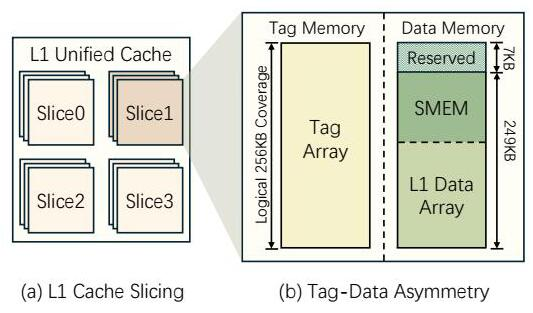
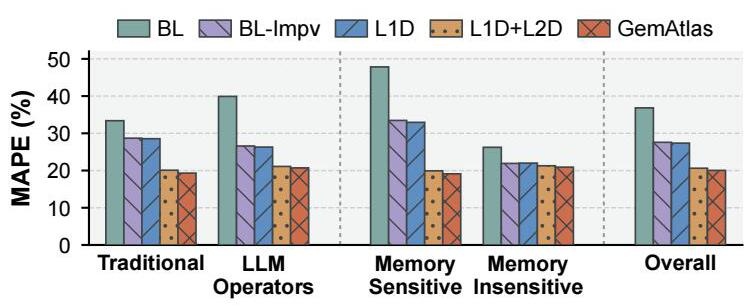

Uncovering the Memory Hierarchy of Modern NVIDIA GPUs for Accurate Simulation
Ziwen Wang \({}^1\) , Jiapeng Zhou \({}^1\) , Changxi Liu \({}^{1, *}\) , Dongsheng Wang \({}^2\) , Yun Chen \({}^{1, *} \; {}^1\) The Hong Kong University of Science and Technology (Guangzhou), \({}^2\) Tsinghua University {zwang578, jzhou418}@connect.hkust-gz.edu.cn, {changxiliu, yunchen}@hkust-gz.edu.cn, wds@tsinghua.edu.cn *Corresponding authors
Ziwen Wang \({}^1\)，Jiapeng Zhou \({}^1\)，Changxi Liu \({}^{1, *}\)，Dongsheng Wang \({}^2\)，Yun Chen \({}^{1, *} \; {}^1\) 香港科技大学（广州），\({}^2\) 清华大学 {zwang578, jzhou418}@connect.hkust-gz.edu.cn，{changxiliu, yunchen}@hkust-gz.edu.cn，wds@tsinghua.edu.cn *通讯作者
Abstract-Emerging artificial intelligence workloads, particularly Large Language Models (LLMs), place unprecedented demands on GPU memory systems. Consequently, architectural innovations increasingly target the memory system to alleviate these bottlenecks. However, existing works still rely on outdated memory hierarchy models that fail to capture the complexities of modern hardware. This fidelity gap leads to inaccurate characterization and could misguide optimization strategies.
摘要——新兴的人工智能工作负载，尤其是大语言模型 (Large Language Models, LLMs)，对 GPU 内存系统提出了前所未有的需求。因此，架构创新越来越多地以内存系统为目标，以缓解这些瓶颈。然而，现有工作仍依赖于过时的内存层次模型 (memory hierarchy models)，这些模型无法刻画现代硬件的复杂性。这种保真度差距 (fidelity gap) 会导致刻画不准确，并可能误导优化策略 (optimization strategies)。
To bridge this gap, we present GemAtlas, the first systematic reverse engineering of the memory hierarchy in modern NVIDIA GPUs. By developing fine-grained SASS-level benchmarking, we expose critical, previously undocumented micro-architectural details across different cache levels, including cache set associativity, slice-routing and set-indexing hash functions, replacement policies, coherence behavior, and interconnect topologies.
为弥合这一差距，我们提出 GemAtlas，这是首个针对现代 NVIDIA GPU 中存储层次 (memory hierarchy) 的系统性逆向工程 (reverse engineering)。通过开发细粒度 SASS 级基准测试 (SASS-level benchmarking)，我们揭示了跨不同缓存层级的关键且此前未记录的微架构细节 (micro-architectural details)，包括缓存组相联度 (cache set associativity)、切片路由与组索引哈希函数 (slice-routing and set-indexing hash functions)、替换策略 (replacement policies)、一致性行为 (coherence behavior) 以及互连拓扑 (interconnect topologies)。
We integrate these discovered micro-architecture details into the state-of-the-art GPU simulation framework. The final results demonstrate that GemAtlas reduces the mean absolute percentage error (MAPE) from 31.69% to 22.24% on average across four GPUs. Specifically, GemAtlas reduces the MAPE from 34.04% to 23.98% for real-world LLM operators.
我们将这些已发现的微架构 (micro-architecture) 细节集成到最先进的 GPU 仿真框架 (GPU simulation framework) 中。最终结果表明，GemAtlas 在四块 GPU 上平均将平均绝对百分比误差 (mean absolute percentage error, MAPE) 从 31.69% 降至 22.24%。具体而言，对于真实世界的 LLM 算子 (LLM operators)，GemAtlas 将 MAPE 从 34.04% 降至 23.98%。
I. INTRODUCTION
In recent years, GPUs have evolved from graphics accelerators into general-purpose computing platforms and are now widely used for throughput-oriented workloads, including bioinformatics [7], [38], molecular dynamics [31], [34], reacting-flow simulation [44], and deep learning [8], [37], [42]. As GPU computing capabilities continue to advance, improvements in the memory system have not kept pace, making memory performance an increasingly important bottleneck [15].
近年来，GPU 已从图形加速器 (graphics accelerator) 演变为通用计算平台 (general-purpose computing platform)，如今被广泛用于面向吞吐量的工作负载 (throughput-oriented workloads)，包括生物信息学 (bioinformatics) [7], [38]、分子动力学 (molecular dynamics) [31], [34]、反应流模拟 (reacting-flow simulation) [44] 以及深度学习 (deep learning) [8], [37], [42]。随着 GPU 计算能力持续提升，存储系统 (memory system) 的改进却未能同步跟上，这使得存储性能 (memory performance) 日益成为重要的瓶颈 (bottleneck) [15]。
More recently, LLM training and inference have become the primary workloads on modern GPUs. As model sizes and context lengths increase, the memory footprint of model parameters and the KV cache imposes high bandwidth and capacity demands on the memory subsystem [9], [29]. Consequently, overall performance of GPU system has become increasingly sensitive to memory hierarchy behavior and data path efficiency.
最近，大语言模型 (LLM) 训练和推理已成为现代 GPU 上的主要工作负载。随着模型规模和上下文长度增加，模型参数和 KV 缓存 (KV cache) 的内存占用 (memory footprint) 对存储子系统 (memory subsystem) 提出了高带宽和高容量需求 [9], [29]。因此，GPU 系统的整体性能对存储层次 (memory hierarchy) 行为和数据通路 (data path) 效率变得越来越敏感。
However, the memory hierarchy of modern commercial GPUs remains largely opaque at the microarchitectural level. Existing reverse-engineering studies on modern GPUs have focused on SM-core internals, providing detailed analyses of scheduling and execution behavior [18]. In contrast, reverse engineering of the memory hierarchy remains fragmented and coarse-grained [1], [24], [28], [35], [51], [54], making it difficult to explain memory-dependent performance behavior on real hardware and perform fine-grained performance optimization.
然而，现代商用 GPU 的存储层次 (memory hierarchy) 在微架构层面仍基本不透明。现有针对现代 GPU 的反向工程 (reverse engineering) 研究主要聚焦于 SM 核心 (SM-core) 内部，对调度 (scheduling) 与执行行为 (execution behavior) 进行了详细分析 [18]。相比之下，针对存储层次的反向工程仍较为零散且粒度较粗 (coarse-grained) [1], [24], [28], [35], [51], [54]，这使得难以解释真实硬件上与存储相关的性能行为，也难以进行细粒度 (fine-grained) 性能优化。
To address this gap, we present GemAtlas, a unified reverse-engineering and modeling framework dedicated to the memory hierarchy of modern GPUs. GemAtlas characterizes key memory-hierarchy behaviors at cache-set granularity across the L1, L2 data cache, and constant-memory hierarchies (L0, L1, and L1.5). Table 1 summarizes our specific reverse-engineering contributions across these levels, detailing newly exposed set associativity, topologies, mapping policies, and replacement mechanisms. To validate our findings and evaluate their impact, we incorporate them into AccelSim, a widely used GPU simulator [18], [26]. Evaluation on a benchmark suite spanning traditional GPU benchmarks and real-world LLM operators shows substantially improved fidelity, reducing the average MAPE over four GPUs from 31.69% to 22.24%, and from 34.04% to 23.98% for the LLM operators, with particularly large gains for memory-sensitive workloads, whose MAPE decreases from 36.33% to 20.61%. In summary, GemAtlas makes the following contributions:
为弥补这一空白，我们提出 GemAtlas，一个专用于现代 GPU 内存层次结构 (memory hierarchy) 的统一逆向工程 (reverse-engineering) 与建模 (modeling) 框架。GemAtlas 以缓存组 (cache set) 粒度刻画 L1、L2 数据缓存 (data cache) 以及常量内存 (constant memory) 层次结构（L0、L1 和 L1.5）中的关键内存层次行为。表1 总结了我们在这些层级上的具体逆向工程 (reverse-engineering) 贡献，详细说明新揭示的组相联度 (set associativity)、拓扑结构 (topologies)、映射策略 (mapping policies) 和替换机制 (replacement mechanisms)。为验证我们的发现并评估其影响，我们将其纳入 AccelSim——一个广泛使用的 GPU 模拟器 (GPU simulator) [18], [26]。在涵盖传统 GPU 基准测试 (benchmark) 和真实世界大语言模型 (LLM) 算子 (operator) 的基准测试套件 (benchmark suite) 上进行评估表明，保真度 (fidelity) 显著提高，将四块 GPU 上的平均绝对百分比误差 (MAPE) 从 31.69% 降至 22.24%，并将大语言模型 (LLM) 算子的 MAPE 从 34.04% 降至 23.98%，其中内存敏感型工作负载 (memory-sensitive workload) 的收益尤其大，其 MAPE 从 36.33% 降至 20.61%。总之，GemAtlas 作出以下贡献：
- We reverse-engineer the L1 data cache/shared memory microarchitecture on H20, H100, A800, and RTX 4090 and disclose its sliced organization, slice routing and cache set indexing, tag-data asymmetry, and replacement policy.
- 我们逆向解析了 H20、H100、A800 和 RTX 4090 上的 L1 数据缓存/共享内存微架构，并揭示了其分片 (slice) 组织、分片路由 (slice routing) 与缓存组 (cache set) 索引、标签-数据不对称 (tag-data asymmetry) 以及替换策略 (replacement policy)。
- We reconstruct the complete topology of the distributed Hopper L2 cache across partition, Frame Buffer Partitions (FBP) and slice levels; derive the memory-interleave hash; expose coherence/replacement behavior; and introduce an efficient hash-guided eviction-set construction method for modern GPUs.
我们重建了分布式 Hopper L2 缓存（distributed Hopper L2 cache）跨分区（partition）、帧缓冲区分区（Frame Buffer Partitions, FBP）和切片（slice）层级的完整拓扑（topology）；推导了内存交织哈希（memory-interleave hash）；揭示了缓存一致性/替换行为（coherence/replacement behavior）；并提出了一种面向现代 GPU（modern GPUs）的高效哈希引导驱逐集构建方法（hash-guided eviction-set construction method）。
- We systematically dissect the constant memory hierarchy across L0, L1, and GPC-level L1.5 cache, recovering hierarchy organization, cache-set hash indexing rules, and replacement policy.
- 我们系统地剖析了跨越L0、L1和GPC级L1.5缓存 (GPC-level L1.5 cache) 的常量内存层次结构 (constant memory hierarchy)，恢复了层次组织结构、缓存组 (cache set) 哈希索引规则和替换策略 (replacement policy)。
- We develop a benchmark suite, GemAtlas-Bench, that extends GPU simulation beyond traditional workloads to include real-world LLM operators drawn from vLLM [27] and PyTorch [43].
我们开发了基准测试套件 (benchmark suite) GemAtlas-Bench，它将 GPU 模拟 (GPU simulation) 扩展到传统工作负载之外，以纳入取自 vLLM [27] 和 PyTorch [43] 的真实 LLM 算子 (LLM operators)。
- We integrate the recovered mechanisms into AccelSim [26], a widely used GPU simulator, and validate the model against four GPUs (H20, H100, A800, and RTX 4090) using GemAtlas-Bench, substantially improving accuracy for LLM operators and memory-sensitive workloads.
- 我们将恢复出的机制集成到广泛使用的 GPU 模拟器 (GPU simulator) AccelSim [26] 中，并使用 GemAtlas-Bench 在四款 GPU（H20、H100、A800 和 RTX 4090）上验证该模型，显著提升了 LLM 算子 (LLM operators) 和内存敏感型工作负载 (memory-sensitive workloads) 的准确性。
TABLE I
CONTRIBUTION MAP OF REVERSE-ENGINEERED MECHANISMS ON H20 AND H100 ACROSS CACHE LEVELS.
H20 和 H100 上跨缓存层级 (cache levels) 的逆向工程机制 (reverse-engineered mechanisms) 贡献图。
| Reverse-Engineered Mechanism | L1 D-Cache/SMEM | L2 Cache | L0 C-Cache | L1 C-Cache | GCC (L1.5) | |
| Structure | Hierarchy Topology | ✓ N | ✓ | - | - | ✘ |
| Capacity | ✓ I | ✘ | ✓ N | ✓ | ✓ | |
| Geometry (line/set/way) | ✓ I | ✓ | ✓ N | ✓ | ✓ | |
| Mapping & Policy | Physical Routing (slice) Hash Function | ✓ N | ✓ | - | ✘ | |
| Cache Set Index Hash Function | ✓ N | ✘ | ✓ N | ✓ | ✓N | |
| Cache Set Replacement Policy | ✓ N | ✓ | ✓ N | ✓N | ✘ | |
| Cache-Set-Level Cross-Partition Coherence | - | ✓N | - | - | - | |
| Validation & | Latency & Data-Path Characterization | ✓ | ✓ $\mathbf{I}$ | ✓ I | ✓ | ✓ |
| Utility | Eviction-set Construction Support | ✓N | ✓N | ✓ N | ✓N | ✘ |
| Legend: $\;\rho^{\mathrm{N}}$ New (first reverse-engineered) ✓ Improved over prior work | ✓ Not covered | - Not applicable | ||||
II. BACKGROUND AND MOTIVATION
GPU Architecture and Memory Hierarchy. Modern NVIDIA GPUs are organized hierarchically into Graphics Processing Clusters (GPCs), Streaming Multiprocessors (SMs), and SM-subpartitions (SMSPs) [32], [40]. In the CUDA programming model, a kernel is decomposed into thread blocks, blocks are scheduled onto SMs, and warps are the basic scheduling unit within an SMSP. The on-chip memory hierarchy consists of three parts. Each SM has a unified L1 cache that integrates data caching, shared memory (SMEM), and texture functionality [40]. A dedicated constant-memory hierarchy provides access paths for read-only data through the Indexed Constant Cache (IDC), Data Constant Cache (DCC), Immediate Constant Cache (IMC), and GPC Constant Cache (GCC) [41]. All SMs access a shared L2 cache through the on-chip network (NoC). This L2 is distributed across partitions, each connected to a subset of GPCs [24], [33]. Each partition contains multiple Frame Buffer Partitions (FBPs) that interface with the memory controllers directly, and each FBP groups multiple independently addressed L2 slices.
GPU 架构与存储层次 (GPU Architecture and Memory Hierarchy)。现代 NVIDIA GPU 按层次组织为图形处理集群 (Graphics Processing Cluster, GPC)、流式多处理器 (Streaming Multiprocessor, SM) 和 SM 子分区 (SM-subpartition, SMSP) [32], [40]。在 CUDA 编程模型中，一个内核 (kernel) 被分解为线程块 (thread block)，线程块被调度到 SM 上，而线程束 (warp) 是 SMSP 内的基本调度单元。片上存储层次 (on-chip memory hierarchy) 由三部分组成。每个 SM 都有一个统一的 L1 缓存 (unified L1 cache)，其集成了数据缓存、共享内存 (shared memory, SMEM) 和纹理功能 [40]。专用的常量内存层次 (constant-memory hierarchy) 通过索引常量缓存 (Indexed Constant Cache, IDC)、数据常量缓存 (Data Constant Cache, DCC)、立即常量缓存 (Immediate Constant Cache, IMC) 和 GPC 常量缓存 (GPC Constant Cache, GCC) 为只读数据提供访问路径 [41]。所有 SM 通过片上网络 (on-chip network, NoC) 访问共享的 L2 缓存 (L2 cache)。该 L2 缓存分布在多个分区 (partition) 上，每个分区连接到 GPC 的一个子集 [24], [33]。每个分区包含多个帧缓冲分区 (Frame Buffer Partition, FBP)，这些 FBP 直接与内存控制器 (memory controller) 接口，并且每个 FBP 将多个可独立寻址的 L2 切片 (L2 slice) 分组在一起。
Undocumented Memory Hierarchy Details. Modern GPU workloads, particularly LLMs, are increasingly bottlenecked by memory hierarchy behavior [15], and architecture-specific optimizations that explicitly exploit it have delivered substantial performance gains [11], [12]. Newer GPU features, such as thread block clusters with multicast, L2 cache residency control, and the Tensor Memory Accelerator (TMA), also build on this hierarchy. Understanding the memory hierarchy is therefore a prerequisite both for optimizing these workloads and for studying and modeling these features. Yet the memory hierarchy remains opaque. Official documentation describes only coarse-grained properties, such as cache capacities [40]. Prior reverse-engineering studies go further and measure finer-grained properties, such as line sizes, latencies, and the associativity of some caches [1], [21]-[24], [35], [51], [54]. However, for the large, sliced caches of recent GPUs, set-level mechanisms, such as address mapping and replacement policies, remain unknown. As a result, developers cannot reliably predict the performance impact of high-level optimizations, making performance tuning inherently empirical.
未文档化的内存层次结构细节。现代 GPU 工作负载，尤其是 LLM，正日益受限于内存层次结构 (memory hierarchy) 的行为 [15]，而显式利用该结构的架构特定优化已带来显著性能提升 [11], [12]。较新的 GPU 特性，如支持多播的线程块集群 (thread block clusters with multicast)、L2 缓存驻留控制 (L2 cache residency control) 以及张量内存加速器 (Tensor Memory Accelerator, TMA)，也构建于该层次结构之上。因此，理解内存层次结构既是优化这些工作负载的前提，也是研究和建模这些特性的前提。然而，内存层次结构仍不透明。官方文档仅描述粗粒度属性，如缓存容量 (cache capacities) [40]。此前的逆向工程 (reverse-engineering) 研究更进一步，测量了更细粒度的属性，如缓存行大小 (line sizes)、延迟 (latencies) 以及某些缓存的相联度 (associativity) [1], [21]-[24], [35], [51], [54]。然而，对于近期 GPU 的大型分片缓存 (sliced caches)，诸如地址映射 (address mapping) 和替换策略 (replacement policies) 等组级机制 (set-level mechanisms) 仍然未知。因此，开发者无法可靠预测高层优化 (high-level optimizations) 的性能影响，这使得性能调优本质上只能依靠经验。
In addition, the lack of microarchitectural understanding limits architecture research. Existing GPU simulators [5], [18], [26] rely on simplified or outdated memory-hierarchy models and have been evaluated primarily on traditional benchmark suites. Although some evaluations include GEMM kernels, modern LLM workloads comprise a much broader range of operators with diverse memory behavior, leaving their performance simulation unexplored. Our evaluation shows that existing simulators are inaccurate on these operators:
此外，缺乏微架构理解 (microarchitectural understanding) 限制了架构研究 (architecture research)。现有 GPU 模拟器 (GPU simulators) [5], [18], [26] 依赖简化或过时的内存层次结构模型 (memory-hierarchy models)，并且主要是在传统基准测试套件 (benchmark suites) 上评估的。尽管一些评估包含 GEMM 内核 (GEMM kernels)，现代 LLM 工作负载 (LLM workloads) 包含范围广得多、具有多样内存行为 (memory behavior) 的算子 (operators)，导致其性能模拟 (performance simulation) 仍未得到探索。我们的评估表明，现有模拟器在这些算子上并不准确：
On the real-world LLM operators, the newest Accel-Sim GPU simulator [18], [26] has 39.91% MAPE, with MAPE reaching 56.66% for the 11 memory-sensitive LLM operators. Consequently, the fidelity of existing simulators on modern GPU workloads remains uncertain, undermining the reliability of architecture exploration.
在真实世界的 LLM 算子 (operator) 上，最新的 Accel-Sim GPU 模拟器 (GPU simulator) [18], [26] 的平均绝对百分比误差 (MAPE) 为 39.91%，而对于 11 个内存敏感型 LLM 算子，MAPE 达到 56.66%。因此，现有模拟器在现代 GPU 工作负载 (workload) 上的保真度 (fidelity) 仍不确定，这削弱了架构探索 (architecture exploration) 的可靠性。
Together, these limitations motivate systematic reverse engineering of the modern GPU memory hierarchy and its accurate modeling in GPU simulators. By exposing the underlying mechanisms, we aim to bridge this knowledge gap and establish a high-fidelity foundation for systematic performance optimization and architectural analysis.
这些局限性共同推动了对现代 GPU 内存层次结构 (memory hierarchy) 的系统性逆向工程 (systematic reverse engineering)，以及在 GPU 模拟器 (GPU simulators) 中对其进行精确建模 (accurate modeling)。通过揭示其底层机制 (underlying mechanisms)，我们旨在弥合这一知识空白 (knowledge gap)，并为系统性性能优化 (systematic performance optimization) 和架构分析 (architectural analysis) 建立高保真基础 (high-fidelity foundation)。
III. REVERSE ENGINEERING METHODOLOGY
A.The GemAtlas Framework
GemAtlas is a fully automated framework that performs reverse engineering end to end and feeds the recovered parameters directly into simulation. It consists of three components: (1) a SASS microbenchmark suite that implements every probe in Sections IVI-VI as a parameterized template and assembles it for the target GPU; (2) an analysis pipeline that runs the suite and applies the inference steps of Sections IV-VI to produce a parameter table for each cache level; and (3) an extended AccelSim whose memory hierarchy is configured directly from this table (Section VII). For a previously unseen GPU, the user only specifies the target architecture, and probing, inference, and simulator configuration then run without manual intervention.
GemAtlas 是一个全自动框架 (fully automated framework)，可端到端执行逆向工程 (reverse engineering)，并将恢复出的参数直接馈入仿真。它由三个组件构成：(1) 一个 SASS 微基准测试套件 (SASS microbenchmark suite)，将第 IVI-VI 节中的每个探针 (probe) 实现为参数化模板 (parameterized template)，并针对目标 GPU 汇编；(2) 一个分析流水线 (analysis pipeline)，运行该套件并应用第 IV-VI 节的推断步骤 (inference steps)，为每个缓存层级 (cache level) 生成参数表 (parameter table)；(3) 一个扩展的 AccelSim，其内存层级 (memory hierarchy) 直接根据该表配置（第 VII 节）。对于此前未见过的 GPU，用户只需指定目标架构 (target architecture)，随后探测 (probing)、推断 (inference) 和模拟器配置 (simulator configuration) 便无需人工干预即可运行。
Test Platform. We evaluate GemAtlas on NVIDIA H20 and H100 GPUs, both based on the Hopper microarchitecture, as well as A800 (Ampere) and RTX 4090 (Ada), using CUDA 12.8 and cuAssembler [10]. We use H20 as the primary platform for presenting results and report the results on the other GPUs in Section VI-C. GemAtlas is hardware-agnostic and can be readily extended to Blackwell and future architectures with support for their corresponding SASS ISAs.
测试平台。我们在 NVIDIA H20 和 H100 GPU（二者均基于 Hopper 微架构 (microarchitecture)），以及 A800（Ampere）和 RTX 4090（Ada）上评估 GemAtlas，使用 CUDA 12.8 和 cuAssembler [10]。我们以 H20 作为展示结果的主要平台，并在第 VI-C 节报告其他 GPU 上的结果。GemAtlas 与硬件无关 (hardware-agnostic)，并且只要支持相应 SASS 指令集架构 (ISA)，就可以很容易地扩展到 Blackwell 及未来架构。
B. SASS-Level Microbenchmarking
CUDA provides a high-level programming abstraction for NVIDIA GPUs, where applications are written in a C-like language and compiled into PTX, a virtual ISA, before being translated into SASS, the native ISA executed by the hardware [18]. However, neither CUDA nor PTX offers sufficient control for microarchitectural characterization. Compiler optimizations in both the offline backend (ptxas) and the Just-In-Time (JIT) compiler can reorder instructions and alter register allocation, obscuring true latency and invalidating carefully constructed access patterns [16]. As a result, deterministic analysis requires direct manipulation of SASS. Modern NVIDIA GPUs also rely on a compiler-driven scoreboard mechanism rather than dynamic hardware scheduling to manage memory dependencies. SASS instructions carry explicit control codes that manage dependency barriers and dictate when subsequent instructions may issue [10], [18].
CUDA 为 NVIDIA GPU 提供了高级编程抽象 (high-level programming abstraction)，其中应用程序以类 C 语言编写并编译为 PTX（一种虚拟指令集架构 (virtual ISA)），然后再转换为 SASS——由硬件执行的原生指令集架构 (native ISA) [18]。然而，CUDA 和 PTX 都无法为微架构表征 (microarchitectural characterization) 提供足够的控制。离线后端 (offline backend)（ptxas）和即时 (Just-In-Time, JIT) 编译器中的编译器优化都可能重排指令并改变寄存器分配 (register allocation)，从而掩盖真实延迟 (latency) 并使精心构造的访问模式 (access patterns) 失效 [16]。因此，确定性分析 (deterministic analysis) 需要直接操作 SASS。现代 NVIDIA GPU 还依赖编译器驱动的记分板机制 (compiler-driven scoreboard mechanism)，而不是动态硬件调度 (dynamic hardware scheduling)，来管理内存依赖 (memory dependencies)。SASS 指令携带显式控制码 (control codes)，用于管理依赖屏障 (dependency barriers) 并规定后续指令何时可以发射 (issue) [10], [18]。
Direct SASS programming enables two key capabilities for microarchitectural characterization. First, explicit control of scoreboarding allows us to serialize dependent operations and measure memory latency with cycle-level precision. Second, fixed instruction streams ensure deterministic code footprints, which are critical for isolating cache behaviors. For example, in the GCC study (Section VI-B), we place instruction lines into a chosen GCC set with a chain of branches to induce instruction-driven cache evictions. Because NVIDIA does not provide an official SASS assembler, we build our microbench-marks upon the open-source cuAssembler [10]. We extend its Ampere (SM86) support to Hopper (SM90) by updating the ELF parser and packer for the newer cubin format [39], thereby enabling direct SASS execution and microbenchmark construction on Hopper GPUs.
直接 SASS 编程（Direct SASS programming）为微架构表征（microarchitectural characterization）提供了两项关键能力。第一，对记分板（scoreboarding）的显式控制使我们能够串行化依赖操作，并以周期级精度测量内存延迟。第二，固定指令流可确保确定性的代码足迹（code footprints），这对于隔离缓存行为（cache behaviors）至关重要。例如，在 GCC 研究（第 VI-B 节）中，我们用分支链将指令行放入选定的 GCC 组（GCC set），以引发指令驱动的缓存逐出（cache evictions）。由于 NVIDIA 不提供官方的 SASS 汇编器（assembler），我们基于开源 cuAssembler [10] 构建微基准测试（microbenchmarks）。我们通过针对更新的 cubin 格式 [39] 更新 ELF 解析器（parser）和打包器（packer），将其对 Ampere (SM86) 的支持扩展到 Hopper (SM90)，从而能够在 Hopper GPU 上直接执行 SASS 并构建微基准测试。
C. Case Study: L1 Eviction Set Construction
An eviction set is a group of addresses that map to the same cache set, forming the basis for recovering cache indexing and replacement behavior. As a case study to validate the effectiveness of our SASS-level microbenchmarking framework, we construct L1 eviction sets using the Group Elimination algorithm [53], but implemented entirely at the SASS level. The algorithm iteratively prunes a candidate pool while preserving its ability to evict a target line. Each iteration dynamically generates a SASS sequence that accesses the target address \(T\) followed by the candidate pool. Using this workflow, we recover stable L1 eviction sets. For example, the eviction set for target address \(0 \times 0\) is \(\{ 0 \times 13880,0 \times 20\mathrm{\;d}80,0 \times 33500\) , \(0 \times 4bb00\}\) . Figure 1 shows the latency of re-accessing \(0 \times 0\) as these lines are accessed one by one: \(0 \times 0\) remains an L1 hit (31 cycles) after three of them and becomes a miss after the fourth, whereas lines from another set never evict it. The minimal cardinality of four indicates 4-way associativity and provides the basis for the L1 analyses in the next section.
驱逐集 (eviction set) 是一组映射到同一缓存组 (cache set) 的地址，构成了恢复缓存索引 (indexing) 与替换行为 (replacement behavior) 的基础。作为验证我们 SASS 级微基准测试框架 (microbenchmarking framework) 有效性的案例研究，我们使用分组消除 (Group Elimination) 算法 [53] 构建 L1 驱逐集，但完全在 SASS 级实现。该算法迭代地修剪候选池 (candidate pool)，同时保持其驱逐目标行 (target line) 的能力。每次迭代动态生成一个 SASS 序列，先访问目标地址 (target address) \(T\)，随后访问候选池。使用这一工作流，我们恢复了稳定的 L1 驱逐集。例如，目标地址 \(0 \times 0\) 的驱逐集为 \(\{ 0 \times 13880,0 \times 20\mathrm{\;d}80,0 \times 33500\) , \(0 \times 4bb00\}\)。图 1 展示了当这些行被逐一访问时重新访问 \(0 \times 0\) 的延迟：在访问其中三个之后，\(0 \times 0\) 仍为 L1 命中 (hit)（31 个周期），而在访问第四个之后变为未命中 (miss)，而来自另一组的行从不会驱逐它。最小基数 (minimal cardinality) 为四表明相联度为 4 路 (4-way associativity)，并为下一节中的 L1 分析提供了基础。

Fig. 1. Latency of re-accessing \(0 \times 0\) on \(\mathrm{H}20\) after accessing \(k\) lines from its eviction set (same set) or from the eviction set of \(0 \times 80\) (different set). Each point is the median of 400 runs.
图 1. 在 \(\mathrm{H}20\) 上，从 \(0 \times 0\) 的驱逐集 (eviction set)（同一组 (same set)）或从 \(0 \times 80\) 的驱逐集（不同组 (different set)）访问 \(k\) 个缓存行 (cache line) 后，重新访问 \(0 \times 0\) 的延迟 (latency)。每个点均为 400 次运行的中位数 (median)。
Listing 1. SASS code for an eviction test kernel.
| [B0-----:R-:W-:-:S04] | NOP; | |
| 2 [B0-----:R-:W0:-:S05] | LDG.ERZ, [R2.64 + T] ; | |
| 3 | [B0-----:R-:W0:-:S05] | LDG.ERZ, [R2.64 + CANDIDATE_1] ; |
| [B0-----:R-:W0:-:S05] | LDG.E RZ, [R2.64 + CANDIDATE_2] ; | |
| [B0-----:R-:W0:-:S05] | LDG.ERZ, [R2.64 + CANDIDATE_3] ; | |
| [B0-----:R-:W0:-:S05] | LDG.ERZ, [R2.64 + CANDIDATE_4] ; | |
| [B0-----:R-:W-:-:S04] | S2R R6, SR_CLOCKLO; | |
| 8 | [B------:R-:W0:-:S05] | LDG.ERZ, [R2.64 + T] ; |
| [B0-----:R-:W1:-:S04] | S2R R7, SR_CLOCKLO; | |
| 10 | [B-1-----:R-:W2:-:S04] | IADD3 R6, R7, -R6, RZ ; |
Listing [1] shows a representative eviction-test kernel. The kernel operates in three phases: (1) prime, loading \(T\) into the L1 data cache; (2) evict, accessing candidate addresses to create set contention; and (3) probe, measuring the latency of re-accessing \(T\) using SR_CLOCKLO and IADD3 to classify hits and misses. This execution order is enforced by the scoreboard dependency chain encoded in the bracketed SASS control fields. During traversal, each LDG. E allocates a dependency via W0, while the following instruction waits on it via B0, thereby serializing the loads. The probe path uses the same dependency chain, ensuring that the timing instructions execute only after the re-access to \(T\) completes, and their operands are ready. This explicit control yields cycle-accurate hit/miss timing. We use the same SASS-level methodology to construct the eviction sets needed for reverse engineering the L2 data cache and the constant-memory hierarchy in the following sections.
清单 (Listing) [1] 展示了一个具有代表性的驱逐测试内核 (eviction-test kernel)。该内核分三个阶段运行：(1) 预填充 (prime)，将
$T$加载到 L1 数据缓存 (L1 data cache)；(2) 驱逐 (evict)，访问候选地址以制造组争用 (set contention)；(3) 探测 (probe)，使用 SR_CLOCKLO 和 IADD3 测量重新访问$T$的延迟，以对命中与未命中进行分类。该执行顺序由方括号中的 SASS 控制字段 (bracketed SASS control fields) 所编码的记分板依赖链 (scoreboard dependency chain) 强制执行。在遍历期间，每条 LDG. E 通过 W0 分配一个依赖，而后续指令通过 B0 等待该依赖，从而串行化这些加载。探测路径使用相同的依赖链，确保计时指令 (timing instructions) 仅在重新访问$T$完成后执行，并且其操作数已就绪。这种显式控制产生周期精确的命中/未命中计时 (cycle-accurate hit/miss timing)。我们使用相同的 SASS 级方法 (SASS-level methodology) 来构造后续各节中逆向工程 (reverse engineering) L2 数据缓存 (L2 data cache) 和常量内存层次结构 (constant-memory hierarchy) 所需的驱逐集 (eviction sets)。
IV.L1 DATA CACHE
Modern NVIDIA GPUs use a unified memory structure that dynamically partitions capacity among the L1 data cache, shared memory (SMEM), and texture cache. In this section, we use SASS microbenchmarks to recover the organization of the L1 data cache within this structure. We find that the L1 consists of four slices of 128 4-way sets each, indexed by an XOR hash of the virtual address. It keeps a fixed tag array while its data array shrinks with larger SMEM allocations, and it uses a Segmented LRU (SLRU) replacement policy.
现代 NVIDIA GPU 采用统一内存结构 (unified memory structure)，在 L1 数据缓存 (L1 data cache)、共享内存 (shared memory, SMEM) 和纹理缓存 (texture cache) 之间动态划分容量。在本节中，我们使用 SASS 微基准测试 (SASS microbenchmarks) 来还原该结构中 L1 数据缓存的组织方式。我们发现，L1 由四个切片 (slice) 组成，每个切片包含 128 个 4 路组 (4-way set)，并由虚拟地址 (virtual address) 的 XOR 哈希 (XOR hash) 进行索引。它保持固定的标签阵列 (tag array)，而其数据阵列 (data array) 会随着更大的 SMEM 分配而收缩，并且采用分段 LRU (Segmented LRU, SLRU) 替换策略 (replacement policy)。
A. Physical Organization and Tag-Data Asymmetry
We begin by characterizing three baseline L1 properties using our SASS-level methodology: line size, associativity, and hit latency. We observe a \(128\mathrm{\;B}\) cache line grouped into four 32 B sectors, 4-way associativity (confirmed by a minimal eviction-set cardinality of four in Section III-C), and a 31-cycle hit latency measured with the SASS probe in Listing II.
我们首先使用 SASS 级方法 (SASS-level methodology) 刻画三项基线 L1 属性：缓存行大小 (line size)、相联度 (associativity) 和命中延迟 (hit latency)。我们观察到 \(128\mathrm{\;B}\) 的缓存行 (cache line) 被划分为四个 32 B 扇区 (sector)、4 路相联度 (4-way associativity)（由第 III-C 节中最小驱逐集基数 (minimal eviction-set cardinality) 为 4 所证实），以及使用清单 II 中的 SASS 探针 (SASS probe) 测得的 31 个周期命中延迟。
TABLE II
PHYSICAL L1 DATA ARRAY CAPACITIES UNDER VARYING SHARED MEMORY (SMEM) CONFIGURATIONS.
不同共享内存 (SMEM) 配置下的物理 L1 数据阵列容量
| Total SMEM | Total L1 Size | Slice Capacity | Data-Line Capacity |
| 8 KiB | 241 KiB | 60.25 KiB | 482 |
| 16 KiB | 233 KiB | 58.25 KiB | 466 |
| 32 KiB | 217 KiB (Default) | 54.25 KiB | 434 |
| 64 KiB | 185 KiB | 46.25 KiB | 370 |
| 100 KiB | 149 KiB | 37.25 KiB | 298 |
| 132 KiB | 117 KiB | 29.25 KiB | 234 |
| 164 KiB | 85 KiB | 21.25 KiB | 170 |
| 196 KiB | 53 KiB | 13.25 KiB | 106 |
| 228 KiB | 21 KiB | 5.25 KiB | 42 |
Accurate Capacity Measurement. Prior studies typically estimate L1 capacity using CUDA-level pointer-chasing mi-crobenchmarks [36], [51]. In contrast, we measure L1 capacity at cache-line granularity using the SASS-level eviction sets derived in Section III-C. For each of the nine SMEM configurations, we fill each cache set until the first capacity-driven eviction and determine the data-array capacity from the number of resident lines. As shown in Table II, the combined L1 data cache and SMEM capacity is \(249\mathrm{KiB}\) in every configuration, \(7\mathrm{KiB}\) below the \(256\mathrm{KiB}\) unified capacity reported in official documentation [40]. Notably, under the default configuration, where the kernel requests no SMEM, the effective L1 data cache capacity is only \(217\mathrm{KiB}\) , revealing an implicit \(32\mathrm{KiB}\) reservation for SMEM. We discuss a possible cause of the \(7\mathrm{KiB}\) gap in Section VIII.
精确容量测量 (Accurate Capacity Measurement)。已有研究通常使用 CUDA 级指针追逐 (pointer-chasing) 微基准测试 (microbenchmarks) [36], [51] 来估计 L1 容量。相比之下，我们使用第 III-C 节推导出的 SASS 级驱逐集 (eviction sets)，以缓存行 (cache line) 粒度测量 L1 容量。对于九种共享内存 (SMEM) 配置中的每一种，我们填满每个缓存组 (cache set)，直到首次容量驱动的驱逐 (capacity-driven eviction)，并根据驻留缓存行 (resident lines) 的数量确定数据阵列容量 (data-array capacity)。如表 II 所示，L1 数据缓存 (L1 data cache) 与共享内存 (SMEM) 的合计容量在每个配置中均为 \(249\mathrm{KiB}\)，比官方文档 [40] 报告的 \(256\mathrm{KiB}\) 统一容量 (unified capacity) 低 \(7\mathrm{KiB}\)。值得注意的是，在默认配置下，即内核不请求共享内存 (SMEM) 时，有效 L1 数据缓存容量仅为 \(217\mathrm{KiB}\)，这表明为共享内存 (SMEM) 隐式预留了 \(32\mathrm{KiB}\)。我们在第 VIII 节讨论 \(7\mathrm{KiB}\) 差距的可能原因。
The 4-Slice Topology. During per-set cache filling, evictions occur before the aggregate L1 capacity is reached. Moreover, the evicted lines always come from the same one-quarter of the filled sets, for example, 108 of 432 under the default configuration. This indicates that the L1 is divided into four slices, each holding one-quarter of the sets with its own tag and data arrays (Fig. 2(a)). Once the data array of one slice is full, a new line in that slice evicts a line from another set of the same slice, while the other slices still have free space. We call this a cross-set eviction and explain it with the tag-data asymmetry (Fig. 2(b)) later in this subsection. Across all SMEM configurations, the four slices have equal capacity, reported in Table II in KiB and as the number of \(128\mathrm{\;B}\) cache lines per slice.
四切片拓扑 (4-Slice Topology)。在逐缓存集 (cache set) 填充过程中，驱逐 (eviction) 会在达到 L1 总容量之前发生。此外，被驱逐的缓存行总是来自已填充缓存集中相同的四分之一部分，例如默认配置下的 432 个中有 108 个。这表明 L1 被划分为四个切片 (slice)，每个切片持有四分之一的缓存集，并拥有自己的标签阵列 (tag array) 和数据阵列 (data array)（图 2(a)）。一旦某个切片的数据阵列已满，该切片中的新缓存行会从同一切片中的另一个缓存集驱逐一行，而其他切片仍有空闲空间。我们将此称为跨集驱逐 (cross-set eviction)，并在本小节后文结合标签-数据不对称 (tag-data asymmetry) 对其进行解释（图 2(b)）。在所有 SMEM 配置下，四个切片具有相同容量，表 II 以 KiB 为单位报告了该容量，并报告了每个切片的 \(128\mathrm{\;B}\) 缓存行数量。
Address Indexing and XOR Hash. We then recover the L1 indexing logic that maps each virtual address to a slice and an in-slice cache set. Using eviction-set probes at a 128 B cache-line stride, we find that the 512 cache lines within a \(64\mathrm{KiB}\) address span map one-to-one onto 512 distinct slice/set pairs, that is, 128 sets in each of the four slices. Each address is therefore mapped by a 9-bit logical index, consisting of a 2- bit slice index and a 7-bit in-slice set index.
地址索引 (Address Indexing) 与 XOR 哈希 (XOR Hash)。随后，我们恢复 L1 索引逻辑 (L1 indexing logic)，该逻辑将每个虚拟地址 (virtual address) 映射到一个切片 (slice) 和一个片内缓存组 (in-slice cache set)。利用在 128 B 缓存行步长 (cache-line stride) 下进行的驱逐集探测 (eviction-set probes)，我们发现，在 \(64\mathrm{KiB}\) 地址跨度 (address span) 内的 512 条缓存行 (cache line) 一一映射到 512 个不同的切片/组对 (slice/set pair)，即在四个切片 (slice) 的每一个中有 128 个缓存组 (cache set)。因此，每个地址由 9 位逻辑索引 (logical index) 映射，该索引由 2 位切片索引 (slice index) 和 7 位片内组索引 (in-slice set index) 组成。

Fig. 2. Microarchitectural organization of the L1 unified cache.
图 2. L1 统一缓存 (L1 unified cache) 的微架构组织。

Fig. 3. Bit-mapping heatmap of the L1 hash-routing function.
图3. L1哈希路由函数 (hash-routing function) 的位映射热力图 (bit-mapping heatmap)。
Using bit-flipping analysis [14], we determine how virtual-address bits generate this 9-bit logical index. The recovered mapping is generated by XOR reductions over selected virtual-address bits drawn from \(b_7\) to \(b_{36}\) . Bits \(b_0 - b_6\) do not participate because they encode the 128 B cache-line offset, and we do not consider bits above \(b_{36}\) , which lie outside the \(96\mathrm{GiB}\) address range of H20. Figure 3 summarizes the recovered bit mapping as a heatmap, where rows \(I_0 - I_6\) correspond to the in-slice set index and rows \(S_0\) and \(S_1\) correspond to the slice index. For example, the mapping for cache set index bit \(I_0\) is
利用位翻转分析 (bit-flipping analysis) [14]，我们确定虚拟地址位如何生成这个 9 位逻辑索引 (logical index)。恢复出的映射由对从 \(b_7\) 到 \(b_{36}\) 中选定的虚拟地址位进行 XOR 归约 (XOR reductions) 生成。位 \(b_0 - b_6\) 不参与，因为它们编码 128 B 的缓存行偏移 (cache-line offset)，并且我们不考虑高于 \(b_{36}\) 的位，它们位于 H20 的 \(96\mathrm{GiB}\) 地址范围之外。图 3 以热力图 (heatmap) 形式总结了恢复出的位映射，其中行 \(I_0 - I_6\) 对应片内组索引 (in-slice set index)，行 \(S_0\) 和 \(S_1\) 对应切片索引 (slice index)。例如，缓存组索引位 (cache set index bit) \(I_0\) 的映射为
\[ I_0 = b_7 \oplus b_{11} \oplus b_{15} \oplus b_{22} \oplus b_{25} \oplus b_{26} \oplus b_{27} \]
\[ \oplus b_{30} \oplus b_{31} \oplus b_{33} \oplus b_{34} \oplus b_{36}. \]
To validate this mapping, we apply it to the measured eviction sets of all 512 sets (15,873 addresses): every address maps to the slice and set of its target. For example, \(0 \times 0\) and its eviction set in Figure 1 all map to slice 0 and set 0 .
为验证该映射 (mapping)，我们将其应用于全部 512 个组 (set)（15,873 个地址）的实测驱逐集 (eviction set)：每个地址都映射到其目标的切片 (slice) 和组 (set)。例如，图 1 中的 \(0 \times 0\) 及其驱逐集 (eviction set) 都映射到切片 (slice) 0 和组 (set) 0。
Hardware Asymmetry: Tag Array vs. Data Array. The tag array follows this fixed logical index: its 512 4-way sets with 128 B lines cover \(256\mathrm{KiB}\) (Fig. 2(b)). We recover identical XOR mappings under all SMEM configurations, so changing the SMEM allocation does not alter this organization. The data array, however, is smaller. Even in the configuration with the largest L1, each slice holds only 482 lines (60.25 KiB; Table II), fewer than the 512 lines needed to fill its 128 4-way sets, and it shrinks further as more of the unified capacity is allocated to SMEM. We refer to this mismatch between a fixed tag array and a smaller data array as the L1 tag-data asymmetry and discuss it further in Section VIII.
硬件不对称：标签阵列 (tag array) 与数据阵列 (data array)。标签阵列遵循这一固定逻辑索引 (logical index)：其 512 个 4 路组 (4-way sets)（行大小为 128 B）覆盖 \(256\mathrm{KiB}\)（图 2(b)）。我们在所有共享内存 (SMEM) 配置下均恢复出相同的 XOR 映射 (XOR mapping)，因此改变 SMEM 分配不会改变这一组织方式。然而，数据阵列更小。即使在 L1 最大的配置中，每个切片 (slice) 也仅包含 482 行 (line)（60.25 KiB；表 II），少于填满其 128 个 4 路组所需的 512 行，并且随着更多统一容量 (unified capacity) 被分配给 SMEM，它还会进一步缩小。我们将固定标签阵列与较小数据阵列之间的这种不匹配称为 L1 标签-数据不对称 (tag-data asymmetry)，并在第 VIII 节中进一步讨论。
This asymmetry leads to three allocation cases. (1) When the target set is full (regardless of whether the data array of the slice is full), the incoming line replaces a line in the same set under the in-set replacement policy (Section IV-B). (2) When the target set has a free tag entry and the slice still has free data capacity, the line is allocated normally. (3) The key case arises when the target set has a free tag entry but the data array of the slice is full, a situation that cannot occur in a conventional cache. In this case, the hardware performs a cross-set eviction within the slice: it first selects a victim set from the sets in the slice, then evicts a line from that set using the local replacement policy, and finally allocates the new line to the target set. To determine how the victim set is selected, we repeat the per-set filling experiment 13,500 times under the default configuration and record the victim sets in each run. The victim set changes from run to run, and its selection probability depends on the fill order: among the 108 sets in the slice, the first 27 filled are selected about 2.5 times as often as the last 27. All nine SMEM configurations show the same trend. We leave the exact selection rule to future work.
这种不对称性导致三种分配情况。（1）当目标组 (target set) 已满时（无论该切片 (slice) 的数据阵列 (data array) 是否已满），传入的缓存行 (incoming line) 会按照组内替换策略 (in-set replacement policy) 替换同一组中的一行（Section IV-B）。（2）当目标组存在空闲标签项 (tag entry) 且该切片仍有空闲数据容量 (data capacity) 时，该缓存行按正常方式分配。（3）关键情况出现在目标组存在空闲标签项但该切片的数据阵列已满时，这种情况在传统缓存 (conventional cache) 中不会发生。在这种情况下，硬件会在该切片内执行跨组逐出 (cross-set eviction)：它首先从该切片中的各个组里选择一个牺牲组 (victim set)，然后使用局部替换策略 (local replacement policy) 从该组中逐出一行，最后将新行分配到目标组。为了确定牺牲组如何选取，我们在默认配置下重复进行逐组填充实验 (per-set filling experiment) 13,500 次，并记录每次运行中的牺牲组。牺牲组会随运行而变化，其选择概率取决于填充顺序 (fill order)：在该切片的 108 个组中，最先填充的 27 个组被选中的频率约为最后 27 个组的 2.5 倍。所有九种共享内存 (SMEM) 配置都表现出相同的趋势。我们将精确的选择规则留待未来工作。
B.L1 Cache Set Replacement Policy
Our measurements show that the L1 data cache employs a Segmented LRU (SLRU) policy [13] rather than conventional unified LRU. Each set contains Probationary and Protected segments: new lines enter the Probationary Segment, while re-accesses promote them to the Protected Segment. Figure 4 summarizes the inferred state transitions.
我们的测量表明，L1 数据缓存 (L1 data cache) 采用分段最近最少使用 (Segmented LRU, SLRU) 策略 [13]，而非传统的统一 LRU (unified LRU)。每个缓存组 (cache set) 包含试用段 (Probationary Segment) 和保护段 (Protected Segment)：新缓存行 (new cache lines) 进入试用段，而重新访问 (re-accesses) 会将其提升至保护段。图 4 总结了推断出的状态转换 (state transitions)。
Listing 2. SASS microbenchmark used to deduce the SLRU mechanisms.
清单 2. 用于推断 SLRU 机制的 SASS 微基准测试。
| 2 | [B0-----:R-:W0:-:S05] | LDG.E | RZ, | [R2.64 ADDR_A]; |
| 3 | [B0-----:R-:W0:-:S05] | LDG.E | RZ, | |
| 4 | [B0-----:R-:W0:-:S05] | LDG.E | RZ, | [R2.64 + ADDR_B]; |
| 5 | [B0-----:R-:W0:-:S05] | LDG.ERZ, [R2.64 + ADDR_B]; // | ||
| 6 | [B0-----:R-:W0:-:S05] | LDG.ERZ, [R2.64 + ADDR_C]; // | ||
| 7 | [B0-----:R-:W0:-:S05] | DG.ERZ, [R2.64 + ADDR_C]; // | ||
| 8 | // Phase 2: Streaming | |||
| 9 | [B0-----:R-:W0:-:S05] | LDG.ERZ, [R2.64 + ADDR_X] | ||
| 10 | D $\lbrack\text{ B }0 - - - - - - - - - - - - - - - - 0\rbrack$ | LDG.E | ||
| 11 | [B0___ $= R - : W0 : - : S05$ ] | RZ, [R2.64 + ADD | ||
| 12 // Phase 3: Probing | ||||
| 13 | [B0______: R-: W-: - : S04] | S2R R6, SR_CLOCKLO; | ||
| 14 | [B______: R-: W0: - : S05] | LDG.ERZ, [R2.64 + TARGET_T]; | ||
| 15 | [B0______: R-: W1: - : S04] | S2R R7, SR_CLOCKLO; | ||
| 16 | [B-1----: R-: W2: -: S04] | IADD3 R6, R7, -R6, RZ; | ||
We infer these transitions with the SASS microbenchmark in Listing 2, which selectively re-accesses target lines \((A - C)\) , streams new lines \((X - Z)\) into the same set to trigger eviction, and times a final probe to determine target residency.
我们使用清单 2 中的 SASS 微基准测试 (SASS microbenchmark) 推断这些转换，该微基准会选择性地重新访问目标行 (target lines) \((A - C)\)，将新行 \((X - Z)\) 流式写入同一缓存组 (cache set) 以触发驱逐 (eviction)，并对最终探测 (final probe) 计时以确定目标驻留 (target residency)。
Streaming-only baseline (Figure 4(a)). With all optional re-accesses disabled, the access stream is \(A, B, C, X, Y, Z\) within one set. We observe that \(Y\) and \(Z\) evict \(A\) and \(B\) , respectively, consistent with LRU eviction within the Probationary Segment when no line is promoted.
仅流式基线 (Streaming-only baseline)（图 4(a)）。在禁用所有可选重访问的情况下，访问流在一个缓存组 (cache set) 内为 \(A, B, C, X, Y, Z\)。我们观察到 \(Y\) 和 \(Z\) 分别逐出 \(A\) 和 \(B\)，这与没有缓存行 (cache line) 被提升时试用段 (Probationary Segment) 内的 LRU 逐出 (LRU eviction) 一致。
Stepwise promotion into Protected (Figure 4(b, c)). We next introduce re-accesses progressively. When only \(A\) is re-accessed (Figure 4(b)), \(Y\) and \(Z\) evict \(B\) and \(C\) while \(A\) remains resident, showing that a re-accessed line is promoted into the Protected Segment and gains higher retention priority. When \(B\) is also re-accessed (Figure 4(c)), \(A\) and \(B\) both remain resident while \(C\) and \(X\) are evicted, indicating that two promoted lines can coexist in the Protected Segment.
逐步提升进入保护段 (Protected Segment)（图4(b, c)）。接下来，我们逐步引入重新访问。当仅重新访问 \(A\) 时（图4(b)），\(Y\) 和 \(Z\) 驱逐 \(B\) 和 \(C\)，而 \(A\) 保持驻留，表明被重新访问的缓存行会被提升到保护段并获得更高的保留优先级。当 \(B\) 也被重新访问时（图4(c)），\(A\) 和 \(B\) 均保持驻留，而 \(C\) 和 \(X\) 被驱逐，表明两条被提升的缓存行可以共存于保护段中。
Priority exchange on protected overflow (Figure 4(d)). Starting from the state in Figure 4(c), we additionally re-access \(C\) , creating a third promoted line and triggering protected overflow. Under subsequent streaming pressure, we observe that \(Y\) evicts \(X\) and then \(Z\) evicts \(A\) . This implies that \(C\) is promoted into the Protected Segment, the LRU line in the Protected Segment \((A)\) is demoted into the Probationary Segment, and the demoted line is inserted at Probationary-MRU, since \(A\) survives one insertion longer than \(X\) . Because the third promotion causes demotion rather than expansion, the Protected Segment can hold at most two lines.
受保护段溢出 (protected overflow) 时的优先级交换 (priority exchange)（图4(d)）。从图4(c)的状态出发，我们额外重新访问 \(C\)，创建第三条提升行 (promoted line)，并触发受保护段溢出。在随后的流式压力 (streaming pressure) 下，我们观察到 \(Y\) 驱逐 \(X\)，随后 \(Z\) 驱逐 \(A\)。这意味着 \(C\) 被提升到受保护段 (Protected Segment)，受保护段中的最近最少使用 (LRU) 行 \((A)\) 被降级到试用段 (Probationary Segment)，且被降级的行插入到试用段最近使用 (Probationary-MRU) 位置，因为 \(A\) 比 \(X\) 多存活一次插入。由于第三次提升导致降级而非扩展，受保护段最多只能容纳两行。
Immediate promotion on re-access. We further test whether promotion depends on timing or on access count. (1) Inserting a delay of up to about two million cycles before or after the re-access of \(A\) does not change the outcomes in Figure 4(b, c), so a line is promoted as soon as it is re-accessed, and its promotion does not expire. (2) Re-accessing \(A\) up to four times gives the same outcome as once, so extra accesses do not affect promotion. Moreover, in the overflow test of Figure 4(d), \(A\) is still demoted when accessed four times and \(B\) and \(C\) only twice, whereas ordering by access count would demote \(B\) . Hence, the Protected Segment is ordered by recency, not by access count.
重新访问 (re-access) 时立即提升 (promotion)。我们进一步测试提升取决于时机 (timing) 还是访问次数 (access count)。(1) 在对 \(A\) 的重新访问之前或之后插入最多约两百万个周期的延迟，不会改变图 4(b, c) 中的结果，因此缓存行 (cache line) 一经重新访问就会被提升，且其提升状态不会过期。(2) 对 \(A\) 重新访问最多四次与访问一次得到的结果相同，因此额外访问不会影响提升。此外，在图 4(d) 的溢出测试 (overflow test) 中，当 \(A\) 被访问四次而 \(B\) 和 \(C\) 仅被访问两次时，\(A\) 仍会被降级 (demoted)，而若按访问次数排序，则会降级 \(B\)。因此，保护段 (Protected Segment) 按最近使用时间 (recency) 排序，而不是按访问次数排序。
Final replacement policy. Taken together, these observations indicate the following SLRU policy: (1) new lines are inserted into the Probationary Segment; (2) a re-access promotes a line into the Protected Segment, where lines have higher retention priority; (3) the two segments maintain separate recency orders, with LRU eviction in the Probationary Segment and, on overflow, the LRU line of the Protected Segment demoted to the MRU position of the Probationary Segment; and (4) the Protected Segment holds at most two lines, and the remaining ways belong to the Probationary Segment.
最终替换策略。综合这些观察，可得出如下 SLRU（Segmented Least Recently Used，分段最近最少使用）策略：(1) 新缓存行插入试用段 (Probationary Segment)；(2) 再次访问会将缓存行提升至保护段 (Protected Segment)，其中缓存行具有更高的保留优先级；(3) 两个段维护各自的最近使用顺序，在试用段中执行 LRU（Least Recently Used，最近最少使用）驱逐，并在溢出时将被保护段中的 LRU 缓存行降级到试用段的 MRU（Most Recently Used，最近最常使用）位置；(4) 保护段最多容纳两条缓存行，其余路 (way) 属于试用段。

Fig. 4. Inferred state transitions of the L1 SLRU policy. Evictions occur exclusively within the Probationary Segment (yellow blocks).
图 4. 推断出的 L1 SLRU（分段最近最少使用，Segmented Least Recently Used）策略状态转换。逐出仅发生在试用段（Probationary Segment，黄色块）内。
V. Distributed L2 Cache
Modern NVIDIA GPUs (e.g., A100, H100, and B200) organize the L2 cache into two partitions, each connected to a subset of GPCs through the on-chip interconnect [24], [33]. In this section, we use SASS microbenchmarks to recover this distributed L2 on H20. We find that its 96 slices are grouped into 12 FBPs across the two partitions and are selected by an XOR hash with a 128-to-96 remapping. Using slice-constrained eviction sets built with this hash, we further characterize replacement and set-level cross-partition coherence.
现代 NVIDIA GPU（例如 A100、H100 和 B200）将 L2 缓存 (L2 cache) 组织为两个分区 (partition)，每个分区通过片上互连 (on-chip interconnect) 连接到一部分图形处理集群 (GPC) [24], [33]。在本节中，我们使用 SASS 微基准测试 (SASS microbenchmarks) 在 H20 上还原这一分布式 L2 (distributed L2)。我们发现，其 96 个切片 (slice) 被分组为跨两个分区的 12 个帧缓冲分区 (FBP, Frame Buffer Partition)，并由带有 128 到 96 重映射 (128-to-96 remapping) 的 XOR 哈希 (XOR hash) 选择。利用基于该哈希构建的切片约束驱逐集 (slice-constrained eviction sets)，我们进一步刻画替换 (replacement) 和组级跨分区一致性 (set-level cross-partition coherence)。

Fig. 5. L2 Cache Topology.
A. Partition-Level Topology and SM Affinity
Mapping SMs to GPCs and Partitions. We read both mappings directly from special registers with the SASS S2R instruction. For the SM-to-GPC mapping, SR_AFFINITY returns the GPC ID of the executing SM. Alternatively, SMs can be grouped by SR_CLOCK, which, unlike the GPU-wide SR_GLOBALTIMER, is shared only by the SMs of one GPC (e.g., two GPCs differ by 2,315,338 cycles). Both methods yield the same grouping. For the GPC-to-partition mapping, SR_SW_SCRATCH returns the same value for all SMs of a partition: 0xA0000000 for 42 SMs and 0x80000000 for the other 36. The resulting topology is asymmetric: Partition0 connects GPC0, GPC1, GPC2, and GPC4, whereas Partition1 connects GPC3, GPC5, and GPC6 (Figure 5, which also shows the SMs of GPC4).
将流式多处理器 (SM) 映射到图形处理集群 (GPC) 与分区 (Partition)。我们使用 SASS S2R 指令直接从特殊寄存器 (special registers) 中读取这两种映射。对于 SM 到 GPC 的映射，SR_AFFINITY 返回正在执行的 SM 的 GPC ID。或者，可按 SR_CLOCK 对 SM 进行分组；与 GPU 范围的 SR_GLOBALTIMER 不同，SR_CLOCK 仅由一个 GPC 的 SM 共享（例如，两个 GPC 相差 2,315,338 个周期）。两种方法得到相同的分组。对于 GPC 到分区的映射，SR_SW_SCRATCH 对同一分区的所有 SM 返回相同的值：42 个 SM 为 0xA0000000，其余 36 个 SM 为 0x80000000。由此得到的拓扑 (topology) 是非对称的：Partition0 连接 GPC0、GPC1、GPC2 和 GPC4，而 Partition1 连接 GPC3、GPC5 和 GPC6（图 5，其中还显示了 GPC4 的 SM）。
SM-to-Partition Latency. Using the SASS probe in Listing 1, we measure the latency of L2 hits and HBM accesses through the local partition, which connects to the probing SM's GPC, and through the remote one. For L2 hits, we first warm the target line in the designated partition; for HBM accesses, we force an L2 miss. Local and remote L2 hits take \(\sim 276\) and \(\sim 446\) cycles, and local and remote HBM accesses take \(\sim 530 - 570\) and \(\sim 700 - 750\) cycles, respectively. Both therefore incur a similar \(\sim 170\) -cycle cross-partition penalty.
流式多处理器到分区 (SM-to-Partition) 延迟。使用代码清单 1 中的 SASS 探针 (SASS probe)，我们测量经由本地分区 (local partition)（连接到探测 SM 的 GPC）以及经由远程分区 (remote partition) 的 L2 命中 (L2 hit) 和 HBM 访问 (HBM access) 的延迟。对于 L2 命中，我们首先在指定分区中预热目标缓存行 (target line)；对于 HBM 访问，我们强制产生一次 L2 未命中 (L2 miss)。本地和远程 L2 命中分别耗时 \(\sim 276\) 和 \(\sim 446\) 个周期，本地和远程 HBM 访问分别耗时 \(\sim 530 - 570\) 和 \(\sim 700 - 750\) 个周期。因此，两者都会产生相似的 \(\sim 170\) 个周期的跨分区惩罚 (cross-partition penalty)。
B.L2 Slice and FBP Organization
Determining the Number of Physical L2 Slices. The number of active physical L2 slices on H20 is determined using a contention-based microbenchmark derived from CuAssem-bler [10]. Global-memory atomic operations execute at the slice where the target cache line is located. Concurrent atomicAdd operations to two addresses in the same slice therefore contend and increase the runtime, whereas addresses in different slices execute nearly in parallel. Runtime thus indicates whether an address pair maps to the same L2 slice.
确定物理 L2 切片 (physical L2 slices) 的数量。H20 上活跃物理 L2 切片 (active physical L2 slices) 的数量通过源自 CuAssem-bler [10] 的基于竞争的微基准测试 (contention-based microbenchmark) 来确定。全局内存原子操作 (global-memory atomic operations) 在目标缓存行 (cache line) 所在的切片上执行。因此，对同一 L2 切片 (L2 slice) 中两个地址的并发 atomicAdd 操作会发生竞争并增加运行时间 (runtime)，而不同 L2 切片 (L2 slice) 中的地址则几乎并行执行。因此，运行时间 (runtime) 可指示一个地址对 (address pair) 是否映射到同一 L2 切片 (L2 slice)。
On H20, we generate 1,024 addresses spanning the range 0x00000 to 0x1FF80 (128 KiB window) with stride 0x80 (one cache line), and perform pairwise atomic contention tests over all ordered address pairs \((1024 \times 1024)\) , treating high-latency pairs as same-slice collisions. Let \(N_{\text{ collide }}\) denote the number of pairs classified as collisions. If the addresses are distributed uniformly over \(S\) slices, the number of same-slice ordered pairs is
在 H20 上，我们生成 1,024 个地址，覆盖 0x00000 至 0x1FF80 的范围（128 KiB 窗口），步长 (stride) 为 0x80（一个缓存行 (cache line)），并对所有有序地址对 \((1024 \times 1024)\) 执行成对原子争用测试 (pairwise atomic contention tests)，将高延迟地址对 (high-latency pairs) 视为同切片冲突 (same-slice collisions)。令 \(N_{\text{ collide }}\) 表示被归类为冲突的地址对数量。若这些地址均匀分布在 \(S\) 个切片 (slices) 上，则同切片有序地址对的数量为
\[ N_{\text{ collide }} = 1024^2/S,\;S = 1024^2/N_{\text{ collide }}. \]
We measure \(N_{\text{ collide }} = 12,288\) , which gives a slice count of \(S = 85.333\) on H20. This non-integer value is inconsistent with a direct physical indexing scheme. We infer a two-stage remapping design: a 7-bit logical slice space (128 outcomes) followed by remapping onto 96 physical slices. Specifically, 64 slices are uniquely mapped (one logical index each), while the remaining 32 slices are shared by two logical indices. Under this model, the probability of same-slice collisions is \(64 \times \left( 1/128\right)^2 + 32 \times \left( 2/128\right)^2 = 3/256\) , which implies an apparent slice count of \(1/(3/256) = 85.333\) , exactly matching our measurement. We therefore conclude that H20 has 96 active physical L2 slices, with 48 slices per partition and \(640\mathrm{KiB}\) per slice.
我们测得 \(N_{\text{ collide }} = 12,288\) ，由此得到 H20 上的切片数 (slice count) 为 \(S = 85.333\)。该非整数值与直接物理索引方案 (direct physical indexing scheme) 不一致。我们推断出一种两阶段重映射设计 (two-stage remapping design)：先使用 7 位逻辑切片空间 (logical slice space)（128 个结果），再重映射到 96 个物理切片 (physical slice) 上。具体而言，64 个切片 (slice) 被唯一映射（每个对应一个逻辑索引），而其余 32 个切片 (slice) 由两个逻辑索引共享。在该模型下，同切片冲突 (same-slice collision) 的概率为 \(64 \times \left( 1/128\right)^2 + 32 \times \left( 2/128\right)^2 = 3/256\) ，这意味着表观切片数 (apparent slice count) 为 \(1/(3/256) = 85.333\) ，与我们的测量完全吻合。因此，我们得出结论：H20 具有 96 个活跃的物理 L2 切片 (slice)，每个分区 (partition) 有 48 个切片 (slice)，每个切片 (slice) 的容量为 \(640\mathrm{KiB}\)。
Identifying FBP Groupings via Cross-SM Correlation. Slice-access latency alone cannot reliably identify FBP groupings because it also depends on each slice's position within the FBP relative to the XBAR, so slices from different FBPs have overlapping latency ranges [24]. Bandwidth contention does not reveal them either, because each memory-side controller sustains more than \(300\mathrm{GiB}/\mathrm{s}\) in our measurements, which our probes cannot saturate. Instead, we identify FBPs from how slice latency varies across SMs, since slices in the same FBP show similar variation. Using the atomic-contention microbenchmark described earlier, we isolate individual slices and measure access latency from each of the 42 SMs in one partition to each of its 48 local slices. After mean-centering per SM to remove systematic offsets, we obtain a \(48 \times 42\) relative-latency matrix (Figure 6(a)). We then compute pairwise Pearson correlations between slices and derive the corresponding correlation-distance matrix, shown in Figure 6(b). The resulting structure reveals six distinct clusters, each containing eight slices, which is further confirmed by standard clustering analysis. We therefore conclude that each partition consists of 6 FBPs with 8 slices each, yielding a total of 12 FBPs and 96 slices across the GPU.
通过跨流式多处理器 (SM) 相关性识别帧缓冲分区 (FBP) 分组。仅凭切片 (slice) 访问延迟本身无法可靠识别 FBP 分组，因为它还取决于每个切片在 FBP 内相对于交叉开关 (XBAR) 的位置，因此来自不同 FBP 的切片具有重叠的延迟范围 [24]。带宽竞争也无法揭示它们，因为在我们测量中，每个内存侧控制器 (memory-side controller) 可维持超过 \(300\mathrm{GiB}/\mathrm{s}\) 的带宽，而我们的探测 (probes) 无法使其饱和。相反，我们根据切片延迟在不同 SM 间的变化来识别 FBP，因为同一 FBP 中的切片表现出相似的变化。使用前文所述的原子竞争微基准测试 (atomic-contention microbenchmark)，我们隔离出各个切片，并测量一个分区内 42 个 SM 中的每个 SM 到其 48 个本地切片中每个切片的访问延迟。在按 SM 进行均值中心化 (mean-centering) 以消除系统性偏移后，我们得到一个 \(48 \times 42\) 的相对延迟矩阵（图 6(a)）。然后，我们计算切片之间的两两 Pearson 相关，并推导出相应的相关距离矩阵 (correlation-distance matrix)，如图 6(b) 所示。所得结构揭示出六个不同的簇，每个簇包含八个切片，这进一步由标准聚类分析 (clustering analysis) 所证实。因此，我们得出结论：每个分区由 6 个 FBP 组成，每个 FBP 包含 8 个切片，从而在整个 GPU 上总共得到 12 个 FBP 和 96 个切片。
Cross-Partition FBP Correspondence. To characterize the cross-partition FBP topology, a fixed SM measures the mean latency to each FBP for remote L2 hits and for the same cache lines after coherence brings them into the home partition. The two sets of latencies have the same rank order across the six FBPs and are highly correlated (Pearson correlation \(> 0.95\) ), differing by a nearly constant offset of \(\sim 178\) cycles, close to the \(\sim 170\) -cycle cross-partition penalty measured in Section V-A. Crossing partitions thus adds an almost uniform penalty without changing the relative SM-to-FBP distances, which implies a one-to-one correspondence between the six FBPs of the two partitions ( \(P0\) and \(P1\) ). Figure 5 shows this mirror topology as \(\mathrm{FBP}_X(\mathrm{P}0) \leftrightarrow \mathrm{FBP}_X(\mathrm{P}1)\) , where the bidirectional arrows denote the cross-partition coherence relationship between matched FBPs.
跨分区帧缓冲分区 (Frame Buffer Partition, FBP) 对应关系。为了刻画跨分区 FBP 拓扑，固定流式多处理器 (Streaming Multiprocessor, SM) 测量到每个 FBP 的平均延迟：一组是远程 L2 (Level 2 cache) 命中，另一组是相同缓存行 (cache line) 在一致性 (coherence) 机制将其带入归属分区 (home partition) 之后。这两组延迟在六个 FBP 上具有相同的排序次序，并且高度相关（皮尔逊相关系数 (Pearson correlation) \(> 0.95\)），二者相差一个近乎恒定的偏移量 \(\sim 178\) 个周期，接近第 V-A 节测得的 \(\sim 170\) 个周期跨分区惩罚。因此，跨分区会增加几乎一致的惩罚，而不改变 SM 到 FBP 的相对距离，这意味着两个分区（\(P0\) 和 \(P1\)）的六个 FBP 之间存在一一对应关系。图 5 将这种镜像拓扑 (mirror topology) 表示为 \(\mathrm{FBP}_X(\mathrm{P}0) \leftrightarrow \mathrm{FBP}_X(\mathrm{P}1)\)，其中双向箭头表示匹配的 FBP 之间的跨分区一致性关系 (cross-partition coherence relationship)。

Fig. 6. (a) Mean-centered SM-to-slice relative-latency heatmap within one partition. (b) Slice correlation-distance heatmap derived from the latency vectors in (a), where distance is defined as \(1 - r\) and \(r\) is the Pearson correlation coefficient. SM labels are display indices reordered according to clustering results (not physical SM IDs).
图 6. (a) 单个分区内均值中心化的流式多处理器 (SM) 到切片 (slice) 相对延迟热图。(b) 由 (a) 中延迟向量导出的切片 (slice) 相关距离热图，其中距离定义为 \(1 - r\)，\(r\) 为皮尔逊相关系数 (Pearson correlation coefficient)。流式多处理器 (SM) 标签为按聚类结果重新排序后的显示索引（不是物理流式多处理器 (SM) ID）。
C. Complete Memory Interleave Hash Recovery
Using bit-flip analysis [14], we recover the complete routing hash that maps each memory address to its partition, FBP, and slice. Because NVIDIA L2 indexing uses physical addresses while user programs observe only virtual addresses, fully recovering the indexing hash is impossible. We therefore restrict our recovery to a \(128\mathrm{MiB}\) virtual address window (the low 27 bits), which is sufficient for our subsequent eviction-set construction on the 60 MiB H20 L2 (Section V-D). Modern NVIDIA GPUs commonly allocate memory using 2 MiB large pages, whose offset bits (bits 0-20) are identical in virtual and physical addresses, so the recovered hash on these bits directly reflects the hardware routing. We therefore report only this portion of the routing hash. The recovered routing equations are:
利用位翻转分析 (bit-flip analysis) [14]，我们恢复了将每个内存地址映射到其分区 (partition)、FBP 和切片 (slice) 的完整路由哈希 (routing hash)。由于 NVIDIA L2 索引使用物理地址，而用户程序只能观察到虚拟地址，因此完全恢复索引哈希 (indexing hash) 是不可能的。因此，我们将恢复限制在一个 \(128\mathrm{MiB}\) 的虚拟地址窗口 (virtual address window)（低 27 位）内，这对于我们后续在 60 MiB H20 L2 上进行的驱逐集构造 (eviction-set construction) 是足够的（第 V-D 节）。现代 NVIDIA GPU 通常使用 2 MiB 大页 (large pages) 分配内存，其偏移位 (offset bits)（位 0-20）在虚拟地址和物理地址中相同，因此在这些位上恢复的哈希 (hash) 直接反映了硬件路由 (hardware routing)。因此，我们仅报告路由哈希 (routing hash) 的这一部分。恢复出的路由方程 (routing equations) 如下：
\[ \begin{gathered}p = PA\lbrack12\rbrack \oplus PA\lbrack13\rbrack \oplus PA\lbrack15\rbrack \oplus PA\lbrack17\rbrack \oplus PA\lbrack19\rbrack \\ f_0 = PA\lbrack8\rbrack \oplus PA\lbrack12\rbrack \oplus PA\lbrack16\rbrack \oplus PA\lbrack18\rbrack \oplus PA\lbrack20\rbrack \\ f_1 = PA\lbrack10\rbrack \oplus PA\lbrack13\rbrack \oplus PA\lbrack16\rbrack \oplus PA\lbrack17\rbrack \oplus PA\lbrack19\rbrack \oplus PA\lbrack20\rbrack \\ f_2 = PA\lbrack11\rbrack \oplus PA\lbrack14\rbrack \oplus PA\lbrack18\rbrack \oplus PA\lbrack19\rbrack \\ s_0 = PA\lbrack8\rbrack \oplus PA\lbrack16\rbrack \oplus PA\lbrack17\rbrack \\ s_1 = PA\lbrack10\rbrack \oplus PA\lbrack16\rbrack \\ s_2 = PA\lbrack11\rbrack \oplus PA\lbrack16\rbrack \oplus PA\lbrack17\rbrack\end{gathered}\tag{1} \]
These equations define a 7-bit logical routing space consisting of one partition bit \(p\) , a 3-bit logical FBP index \(f_{\log} = (f_{2}f_{1}f_0) \in \{ 0,\ldots ,7\}\) , and a 3-bit slice index \(s = (s_{2}s_{1}s_0) \in \{ 0,\ldots ,7\}\) . The FBP and slice equations are shared by both partitions, while \(p\) selects the target partition. Together, they yield \(2 \times 8 \times 8 = 128\) logical destinations. However, \(\mathrm{H}20\) has only \(2 \times 6 \times 8 = 96\) active physical slices (Section V-B), so the 128 logical destinations must be remapped onto them. We recover this remap by locating the physical slice of every line in a \(2\mathrm{MiB}\) page with atomic contention (Section V-B) and comparing it with Eq. (1). The remap preserves the partition bit \(p\) . In each partition, six logical FBPs map one-to-one onto the six physical FBPs, and the other two are folded onto two of them with slice index \(s \oplus 4\) . For the first \(128\mathrm{KiB}\) of a page, this gives
这些方程定义了一个 7 位逻辑路由空间 (logical routing space)，由 1 个分区位 (partition bit) \(p\)、一个 3 位逻辑 FBP 索引 (logical FBP index) \(f_{\log} = (f_{2}f_{1}f_0) \in \{ 0,\ldots ,7\}\) 和一个 3 位切片索引 (slice index) \(s = (s_{2}s_{1}s_0) \in \{ 0,\ldots ,7\}\) 组成。FBP 方程和切片方程由两个分区共享，而 \(p\) 选择目标分区 (target partition)。它们共同产生 \(2 \times 8 \times 8 = 128\) 个逻辑目的地 (logical destinations)。然而，\(\mathrm{H}20\) 仅有 \(2 \times 6 \times 8 = 96\) 个活跃物理切片 (active physical slices)（第 V-B 节），因此必须将这 128 个逻辑目的地重新映射 (remap) 到这些物理切片上。我们通过使用原子竞争 (atomic contention) 定位 \(2\mathrm{MiB}\) 页面中每一行的物理切片（第 V-B 节），并将其与式 (1) 比较，从而恢复这一重映射。该重映射保留分区位 \(p\)。在每个分区中，六个逻辑 FBP 一对一地映射到六个物理 FBP 上，另外两个则通过切片索引 \(s \oplus 4\) 折叠到其中两个上。对于一个页面的前 \(128\mathrm{KiB}\)，这给出
\[ (f_{\text{ phys }}, s_{\text{ phys }}) = \left\{ \begin{array}{ll} (f_{\text{ log }}, s) , & f_{\text{ log }} < 6, \\ (f_{\text{ log }} \oplus 6, s \oplus 4) , & f_{\text{ log }} \geq 6. \end{array}\right.\tag{2} \]
In Eq. (2), logical FBPs 6 and 7 are folded onto physical FBPs 0 and 1, which therefore receive twice as many lines as the other physical FBPs. In each subsequent \(128\mathrm{KiB}\) , the folded logical FBPs land on the next pair of physical FBPs, cycling through the three pairs \(0 - 1,2 - 3\) , and 4-5. This modulo-3 rotation balances the load: each physical pair receives the folded logical FBPs in exactly one of every three consecutive \(128\mathrm{KiB}\) , so all physical FBPs receive the same number of lines over 384 KiB. Eq. (1) and the remap reproduce exactly the 12,288 colliding pairs measured in Section V-B \((S = 85.333)\) .
在式 (2) 中，逻辑帧缓冲分区 (logical FBP) 6 和 7 被折叠到物理帧缓冲分区 (physical FBP) 0 和 1 上，因此这两个物理 FBP 接收到的缓存行 (cache line) 数量是其他物理 FBP 的两倍。在随后的每个 \(128\mathrm{KiB}\) 中，折叠后的逻辑 FBP 落到下一对物理 FBP 上，并在三个对 \(0 - 1,2 - 3\) 和 4-5 之间循环。这种模 3 轮转 (modulo-3 rotation) 平衡了负载：每个物理对恰好在每三个连续的 \(128\mathrm{KiB}\) 中的一个中接收折叠后的逻辑 FBP，因此在 384 KiB 上所有物理 FBP 接收到相同数量的缓存行。式 (1) 和重映射 (remap) 精确复现了第 V-B 节中测得的 12,288 个冲突对 (colliding pair) \((S = 85.333)\)。
D. Slice-Constrained Eviction-Set Construction
Prior L2 eviction-set (ES) construction techniques [53], [57] fail on modern, distributed L2 architectures such as H20. The large capacity of these caches (e.g., 60 MiB) forces traditional group elimination algorithms to filter very large candidate pools, accumulating noise that discards true ES members. Furthermore, undocumented cross-partition coherence traffic introduces interference into the measurements.
先前的 L2 驱逐集（eviction set, ES）构造技术 [53], [57] 在 H20 等现代分布式 L2 架构上失效。这些缓存的大容量（例如 60 MiB）迫使传统组消除算法（group elimination algorithm）过滤非常大的候选池（candidate pool），从而累积噪声并丢弃真正的 ES 成员。此外，未公开的跨分区一致性流量（cross-partition coherence traffic）会给测量引入干扰。
To overcome these challenges, we introduce a slice-constrained group-elimination method. Because only addresses mapping to the same set in the same slice contend, we use our recovered slice hash (Section V-C) to restrict the candidate pool to the target slice. We also perform profiling from an SM in the same partition, avoiding cross-partition coherence interference. Within this reduced pool, group elimination iteratively discards candidate groups that are unnecessary to evict the target, leaving an ES for the target set. This slice constraint aggressively prunes the search space by \(93 \times\) : in our \(120\mathrm{MiB}\) candidate pool, only 10,542 of 983,040 lines fall in the target slice. Successful construction of ESs also provides validation of the recovered slice hash, since stable ESs require a correct slice mapping.
为克服这些挑战，我们引入一种切片约束的分组消除方法 (slice-constrained group-elimination method)。由于只有映射到同一分片中同一组 (set) 的地址才会发生争用，我们使用恢复出的切片哈希 (slice hash)（第 V-C 节）将候选池 (candidate pool) 限制到目标切片 (target slice)。我们还从同一分区 (partition) 中的流多处理器 (SM) 进行性能分析 (profiling)，以避免跨分区一致性干扰 (cross-partition coherence interference)。在这个缩小后的候选池中，分组消除 (group elimination) 迭代地丢弃对于驱逐目标而言不必要的候选组 (candidate groups)，从而为目标组 (target set) 留下一个驱逐集 (eviction set, ES)。这种切片约束将搜索空间 (search space) 大幅缩减（\(93 \times\)）：在我们的 \(120\mathrm{MiB}\) 候选池中，983,040 条缓存行 (cache lines) 中只有 10,542 条落在目标切片中。驱逐集 (ES) 的成功构建也为恢复出的切片哈希提供了验证，因为稳定的驱逐集需要正确的切片映射 (slice mapping)。
From the resulting ESs, we infer that each H20 L2 cache set is 16-way associative and follows a standard LRU replacement policy. Specifically, exactly 16 conflicting accesses evict a line, even if it was accessed ten times before, ruling out SLRU. Moreover, when the 16 lines of a set are re-accessed in random orders (900 trials), a new line always evicts the least recently used one, ruling out pseudo-LRU.
根据得到的驱逐集 (ESs)，我们推断 H20 的每个 L2 缓存组 (cache set) 均为 16 路组相联 (16-way associative)，并遵循标准的 LRU 替换策略 (LRU replacement policy)。具体而言，恰好 16 次冲突访问 (conflicting accesses) 就会驱逐一个缓存行 (cache line)，即使该行此前已被访问十次，从而排除了 SLRU (SLRU)。此外，当一个组中的 16 个缓存行以随机顺序被重新访问时（900 次试验），新缓存行总是驱逐最近最少使用的那一行，从而排除了伪 LRU (pseudo-LRU)。
E. Cross-Partition Coherence at Cache-Set Granularity
Using the slice-constrained ESs constructed in Section V-D, we first access all lines in an ES from an SM in the home partition, placing them in that partition and verifying that they contend for a single cache set. We then access the same lines from an SM connected to the remote partition to create coherent copies. These copies continue to contend for a single cache set, showing that coherence preserves this cache set indexing rather than distributing the lines across multiple sets. Moreover, all 16 ES lines can be coherently replicated into the remote partition and simultaneously occupy this set. Thus, each cache set can hold any mixture of lines mapped to that partition and coherent copies from the peer partition, with no additional per-set capacity limit beyond the standard 16-way associativity.
使用第 V-D 节构建的受切片 (slice) 约束的驱逐集 (ES)，我们首先从归属分区 (home partition) 中的一个流式多处理器 (SM) 访问一个 ES 中的所有缓存行 (cache line)，将它们放入该分区，并验证它们争用同一个缓存组 (cache set)。然后，我们从连接到远端分区 (remote partition) 的 SM 访问相同的缓存行，以创建一致性副本 (coherent copies)。这些副本继续争用同一个缓存组，表明一致性 (coherence) 保留了这种缓存组索引 (cache set indexing)，而不是将这些行分散到多个组中。此外，全部 16 条 ES 缓存行都可以一致地复制到远端分区，并同时占用该组。因此，每个缓存组可以容纳映射到该分区的缓存行与来自对等分区 (peer partition) 的一致性副本的任意混合，并且除了标准的 16 路组相联 (16-way associativity) 之外，没有额外的每组容量限制。
Our measurements further indicate that corresponding cache sets in the two partitions maintain independent LRU states. Evicting a line from one set does not change the LRU order or trigger an eviction in the corresponding set of the other partition. During a cross-partition coherence event, the event behaves as a normal cache hit in the home partition and promotes the target line to the most recently used (MRU) position. In the remote partition, the same event behaves as the insertion of a new cache line: the coherent copy is inserted at the MRU position, and if the set is full, its current LRU line is evicted.
我们的测量进一步表明，两个分区 (partition) 中对应的缓存组 (cache set) 保持独立的最近最少使用 (LRU) 状态。从一个缓存组中逐出 (evict) 一个缓存行 (cache line) 不会改变另一个分区对应缓存组中的 LRU 顺序，也不会触发其中的逐出。在跨分区一致性事件 (cross-partition coherence event) 期间，该事件在归属分区 (home partition) 中表现为正常的缓存命中，并将目标缓存行提升到最近使用 (MRU) 位置。在远程分区 (remote partition) 中，同一事件表现为插入一个新的缓存行：一致性副本被插入到 MRU 位置；如果该缓存组已满，则逐出其当前的 LRU 行。
VI. CONSTANT MEMORY HIERARCHY
In modern GPU workloads, constant memory is widely used to store network weights, scaling factors, and kernel parameters. Official documentation [41] names several constant-cache components (GCC, IDC, DCC, and IMC) but does not describe their organization. In this section, we use SASS microbenchmarks to reconstruct this hierarchy. We find three levels: L0 and L1 constant caches in each SM, both with 2 KiB, 4-way sets and Tree-PLRU replacement, and a 128 KiB GCC that is shared by the SMs of each GPC and also holds instructions.
在现代 GPU 工作负载中，常量内存 (constant memory) 被广泛用于存储网络权重、缩放因子和内核参数。官方文档 [41] 列出了若干常量缓存 (constant-cache) 组件（GCC、IDC、DCC 和 IMC），但未描述其组织结构。在本节中，我们使用 SASS 微基准测试 (microbenchmarks) 来重建该层次结构 (hierarchy)。我们发现三个层级：每个 SM 中的 L0 和 L1 常量缓存 (constant caches)，二者均为 2 KiB、4 路组 (4-way sets)，并采用 Tree-PLRU 替换策略 (replacement policy)；以及一个 128 KiB 的 GCC，它由每个 GPC 的 SM 共享，并且还存放指令 (instructions)。
A.The Intra-SM Hierarchy: L0 and L1 Constant Caches
At the SM level, official documentation distinguishes three constant-data access paths, each associated with a different class of SASS instruction [41]. Immediate operands encoded in instructions (e.g., MOV) use the Immediate Constant Cache (IMC) path, ULDC uses the Data Constant Cache (DCC) path, and standard LDC uses the Indexed Constant Cache (IDC) path. We measure their cache hit latencies as 2, 15, and 25 cycles, respectively.
在流式多处理器 (SM) 层面，官方文档区分了三条常量数据访问路径 (constant-data access path)，每条路径关联不同类别的 SASS 指令 (SASS instruction) [41]。指令中编码的立即操作数 (immediate operand)（例如 MOV）使用立即常量缓存 (Immediate Constant Cache, IMC) 路径，ULDC 使用数据常量缓存 (Data Constant Cache, DCC) 路径，标准 LDC 使用索引常量缓存 (Indexed Constant Cache, IDC) 路径。我们测得它们的缓存命中延迟 (cache hit latency) 分别为 2、15 和 25 个周期。
DCC and IMC Share a Single Physical Cache. Cross-instruction probing shows that MOV and ULDC share a single cache: warming a constant address with MOV makes a subsequent ULDC access hit, and capacity evictions through MOV also evict data brought in by ULDC, whereas cross-probing between LDC and either MOV or ULDC misses in both directions. Thus, the IMC and DCC are physically unified, while the IDC is separate. We attribute the latency difference between MOV and ULDC to their distinct data paths: ULDC routes data through the uniform-register path, whereas MOV uses direct operand fetch.
DCC 与 IMC 共享单个物理缓存 (physical cache)。跨指令探测 (cross-instruction probing) 表明，MOV 与 ULDC 共享单个缓存：用 MOV 预热一个常量地址 (constant address) 会使后续 ULDC 访问命中，并且通过 MOV 发生的容量驱逐 (capacity evictions) 也会驱逐由 ULDC 带入的数据，而 LDC 与 MOV 或 ULDC 之间的交叉探测在两个方向上均未命中。因此，IMC 与 DCC 在物理上是统一的 (physically unified)，而 IDC 则是分离的。我们将 MOV 与 ULDC 之间的延迟差异 (latency difference) 归因于它们不同的数据通路 (data paths)：ULDC 通过统一寄存器通路 (uniform-register path) 路由数据，而 MOV 使用直接操作数获取 (direct operand fetch)。
Cache Placement and Structural Parameters. We identify the physical placement of the IDC through SASS-level cross-warp probing: when one warp warms a cache line using LDC, other warps on different sub-partitions within the same SM still observe a hit, indicating that the IDC is shared at the SM level. We therefore classify it as the L1 Constant Cache. In contrast, the physical placement of the IMC/DCC cache cannot be directly determined due to limitations in the current SASS assembler tool. The documentation is also inconsistent: it places the IMC at the SM-subpartition level and the DCC at the SM level, even though our measurements show that the two are physically unified. Given the 2-cycle hit latency of the IMC, we conjecture that this shared cache resides at the SM-subpartition level and treat it as the L0 Constant Cache.
缓存放置与结构参数。我们通过 SASS 级跨线程束探测 (SASS-level cross-warp probing) 确定 IDC 的物理放置：当一个线程束 (warp) 使用 LDC 预热一条缓存行 (cache line) 时，同一 SM 内不同子分区 (sub-partition) 上的其他线程束仍观察到命中 (hit)，这表明 IDC 在 SM 级共享。因此，我们将其归类为 L1 常量缓存 (L1 Constant Cache)。相比之下，由于当前 SASS 汇编器 (assembler) 工具的限制，无法直接确定 IMC/DCC 缓存的物理放置。文档也不一致：它将 IMC 放在 SM 子分区级 (SM-subpartition level)，将 DCC 放在 SM 级，尽管我们的测量表明二者在物理上是统一的。鉴于 IMC 的 2 周期命中延迟 (hit latency)，我们推测该共享缓存位于 SM 子分区级，并将其视为 L0 常量缓存 (L0 Constant Cache)。
Using SASS-level microbenchmarks, we characterize the structural parameters of the two intra-SM constant caches. The L0 and L1 constant caches exhibit identical structural parameters: each has a \(2\mathrm{KiB}\) capacity, a \(64\mathrm{\;B}\) line size,4-way associativity, and 8 sets. In both caches, set indexing follows the same linear function, set_index = (offset/64) (mod 8).
使用 SASS 级微基准测试 (microbenchmarks)，我们刻画了两个 SM 内常量缓存 (constant cache) 的结构参数。L0 和 L1 常量缓存表现出相同的结构参数：每个都具有 \(2\mathrm{KiB}\) 容量、\(64\mathrm{\;B}\) 缓存行大小、4 路相联 (4-way associativity) 和 8 个组 (sets)。在这两个缓存中，组索引 (set indexing) 遵循相同的线性函数：set_index = (offset/64) (mod 8)。
Listing 3. Microbenchmark for reverse-engineering the replacement policy.
清单 3. 用于逆向工程 (reverse-engineering) 替换策略 (replacement policy) 的微基准测试 (microbenchmark)。
| fill of the 4-way set | |
| [B0-----:R-:W0:-:S05] | LDC R8, c[0x3] [ADDR_A] ; |
| [B0-----:R-:W0:-:S05] | LDC R8, c[0x3] [ADDR_B] ; |
| [B0-----:R-:W0:-:S05] | LDC R8, c[0x3] [ADDR_C] ; |
| [B0-----:R-:W0:-:S05] | LDC R8, c[0x3] [ADDR_D] ; |
| 6 // Phase 2: Selectively | |
| 7 [B0-----:R-:W0:-:S05] | LDC R8, c[0x3] [ADDR_X] ; |
| [B0-----:R-:W0:-:S05] |
Tree-PLRU Replacement Policy. To determine the cache set replacement policy, we use a SASS microbenchmark (see Listing [3]). The benchmark first fills all four ways of a single set with unique addresses \((A, B, C\text{ , and }D)\) . It then accesses these lines in different orders (the touch pattern) before inserting a fifth address \((E)\) to force an eviction. By measuring which address survives, we infer the underlying state machine. If the hardware employed a standard LRU policy, touching \(A\) in Phase 2 would leave \(B\) as the oldest resident line, causing \(B\) to be evicted when \(E\) is allocated. However, our timing results show that touching \(A\) consistently causes \(C\) to be evicted. Through testing various access sequences, we determined that both the L0 and L1 constant caches implement an identical Tree-based Pseudo-LRU (Tree-PLRU) policy.
树状伪最近最少使用 (Tree-PLRU) 替换策略。为确定缓存组 (cache set) 的替换策略，我们使用一个 SASS 微基准测试 (SASS microbenchmark)（见代码清单 [3]）。该基准测试首先用唯一地址 \((A, B, C\text{ , and }D)\) 填满单个缓存组的全部四路 (way)。随后，在插入第五个地址 \((E)\) 以强制发生一次驱逐 (eviction) 之前，它以不同顺序访问这些缓存行（即访问模式 (touch pattern)）。通过测量哪个地址最终保留，我们推断其底层状态机 (state machine)。如果硬件采用标准的最近最少使用 (LRU) 策略，那么在阶段 2 访问 \(A\) 会使 \(B\) 成为最旧的驻留缓存行 (resident line)，从而在分配 \(E\) 时导致 \(B\) 被驱逐。然而，我们的时序结果表明，访问 \(A\) 始终导致 \(C\) 被驱逐。通过测试多种访问序列，我们确定 L0 和 L1 常量缓存 (constant cache) 均实现相同的基于树的伪最近最少使用 (Tree-based Pseudo-LRU, Tree-PLRU) 策略。
The observed behavior is consistent with a 3-bit binary-tree state machine for a 4-way set. One root bit selects between two-way groups, and the corresponding child bit selects a victim within the chosen group. On each access, the corresponding bits flip to point away from the accessed path, thereby determining the pseudo-LRU eviction target for the next allocation.
观察到的行为与用于 4 路组 (4-way set) 的 3 位二叉树状态机 (binary-tree state machine) 一致。一个根位 (root bit) 在两个两路组 (two-way groups) 之间进行选择，而相应的子位 (child bit) 在所选择的组内选择一个牺牲者 (victim)。在每次访问时，相应的位翻转以指向远离访问路径 (accessed path) 的方向，从而确定下一次分配 (allocation) 的伪 LRU (pseudo-LRU) 驱逐目标 (eviction target)。
B.The GPC-Level Unified Cache (GCC)
When a constant load misses the SM-level caches, we observe a 57-cycle latency. This indicates a hit in the GPC Constant Cache (GCC), a structure that unifies constant data and instructions [41]. Cross-SM microbenchmarks verify that an address fetched by one SM results in a hit in the GCC for any other SM residing within the same Graphics Processing Cluster (GPC). This confirms that the GCC is physically located within the GPC and is shared across all its constituent SMs. We therefore classify it as the L1.5 Cache.
当常量加载 (constant load) 未命中 SM 级缓存 (SM-level caches) 时，我们观察到 57 个周期的延迟。这表明命中了 GPC 常量缓存 (GPC Constant Cache, GCC)，该结构统一了常量数据与指令 [41]。跨 SM 微基准测试 (Cross-SM microbenchmarks) 验证：由某一个 SM 获取的地址，对于位于同一图形处理集群 (Graphics Processing Cluster, GPC) 内的任何其他 SM 而言，都会在 GCC 中命中。这证实 GCC 物理上位于 GPC 内，并由组成该 GPC 的所有 SM 共享。因此，我们将其归类为 L1.5 缓存 (L1.5 Cache)。
Extracting GCC Characteristics via Instruction Insertion. We first probe address offsets after an L1 eviction, revealing a 256 B GCC line size. Set-conflict measurements then establish the indexing function as set_index \(= (\text{ address }/256)\) (mod 64), yielding 64 sets.
通过指令插入 (Instruction Insertion) 提取 GCC (GPC Constant Cache) 特性。我们首先在 L1 逐出 (L1 eviction) 后探测地址偏移，揭示了 256 B 的 GCC 行大小 (line size)。随后，集合冲突 (Set-conflict) 测量确定索引函数 (indexing function) 为 set_index \(= (\text{ address }/256)\) (mod 64)，得到 64 个集合 (sets)。
However, measuring the associativity and total capacity is challenging. Because the CUDA programming model limits user-accessible constant memory to \(64\mathrm{KiB}\) , it is impossible to overflow the GCC using only constant data, so MT4G cannot measure its capacity on H100 [51]. To solve this limitation, we follow prior work [21], [22], [54] and leverage the unified nature of the GCC by using instructions to force data evictions. Specifically, a SASS microbenchmark first loads \(c\) constant lines that map to one GCC set and then executes \(k\) instruction lines that map to the same set, using a chain of branches with a \(16\mathrm{KiB}\) stride. A timed probe then checks whether each constant line is still in the GCC.
然而，测量相联度 (associativity) 和总容量 (total capacity) 颇具挑战。由于 CUDA 编程模型 (CUDA programming model) 将用户可访问的常量内存 (constant memory) 限制为 \(64\mathrm{KiB}\)，因此仅使用常量数据 (constant data) 无法使 GPC 常量缓存 (GCC) 溢出，所以 MT4G 无法在 H100 上测量其容量 [51]。为解决这一限制，我们遵循先前工作 [21], [22], [54]，并利用 GCC 的统一性 (unified nature)，通过指令强制进行数据逐出 (data eviction)。具体而言，一个 SASS 微基准测试 (SASS microbenchmark) 首先加载映射到同一个 GCC 组 (set) 的 \(c\) 个常量缓存行 (constant cache lines)，然后执行映射到同一组的 \(k\) 个指令行 (instruction lines)，并使用以 \(16\mathrm{KiB}\) 为步长的分支链 (chain of branches)。随后，定时探测 (timed probe) 检查每个常量缓存行是否仍在 GCC 中。
With up to eight lines in the set, no constant line is evicted, even when all eight are constant lines. With nine lines, for example eight constant lines and one instruction line, one constant line is evicted in every run. Because this bound does not depend on which line the replacement policy evicts, the GCC is 8-way set-associative, with a capacity of \(64 \times 8 \times 256\mathrm{\;B} = 128\mathrm{KiB}\) , much larger than the SM-level constant caches.
当组 (set) 中最多有八行时，即使八行均为常量行 (constant line)，也不会有常量行被逐出。当有九行时，例如八条常量行和一条指令行 (instruction line)，每次运行都会有一条常量行被逐出。由于该界限不取决于替换策略 (replacement policy) 逐出哪一行，GCC（GPC 常量缓存, GPC Constant Cache）为 8 路组相联 (8-way set-associative)，容量为 \(64 \times 8 \times 256\mathrm{\;B} = 128\mathrm{KiB}\)，远大于 SM 级常量缓存 (SM-level constant caches)。
Non-Standard Replacement Policy. In mixed instruction and data microbenchmarks, the GCC replacement behavior deviates from standard LRU, FIFO, or Tree-PLRU policies: after eight constant lines fill a set, the next insertion does not evict the first filled line, and re-accessing any line other than this victim does not change the victim. We leave a detailed characterization of the GCC replacement policy to future work.
非标准替换策略 (Non-Standard Replacement Policy)。在混合指令与数据微基准测试中，GCC 的替换行为偏离标准 LRU、FIFO 或 Tree-PLRU 策略：当八条常量缓存行填满一个组 (set) 后，下一次插入不会淘汰第一个被填充的行，并且重新访问除该牺牲行 (victim) 之外的任何行都不会改变牺牲行。我们将对 GCC 替换策略的详细刻画留待未来工作。
C. Reverse Engineering Other GPUs
Sections IVI-VI recover the memory hierarchy of H20. To show that GemAtlas is hardware-agnostic, we apply the same microbenchmarks to H100 (Hopper), A800 (Ampere), and RTX 4090 (Ada). As Table III shows, all four GPUs share the organization we recover on H20 at every cache level and differ only in parameters, such as the L1 associativity and the number of L2 slices. The only structural difference is that RTX 4090 has a single L2 partition. Its hash still folds eight logical FBPs onto six physical FBPs, but the folding target rotates every \(32\mathrm{KiB}\) instead of every \(128\mathrm{KiB}\) .
第 IVI-VI 节恢复了 H20 的存储层次 (memory hierarchy)。为了表明 GemAtlas 具有硬件无关性 (hardware-agnostic)，我们将相同的微基准测试 (microbenchmarks) 应用于 H100 (Hopper)、A800 (Ampere) 和 RTX 4090 (Ada)。如表 III 所示，四款 GPU 在每个缓存层级 (cache level) 上都共享我们在 H20 上恢复出的组织方式，仅在参数上不同，例如 L1 相联度 (associativity) 和 L2 切片 (slices) 数量。唯一的结构差异在于 RTX 4090 具有单个 L2 分区 (partition)。其哈希 (hash) 仍将八个逻辑 FBP 折叠到六个物理 FBP 上，但折叠目标 (folding target) 每 \(32\mathrm{KiB}\) 轮换一次，而不是每 \(128\mathrm{KiB}\) 轮换一次。
VII. MODELING AND EVALUATION
To evaluate the architectural impact of our reverse-engineered memory hierarchy, we integrate the recovered mechanisms into AccelSim and validate the simulation results against real hardware. Specifically, we use AccelSim v1.3.0 [26] as extended by the open-source release of Huerta et al. [18].
为了评估我们逆向工程得到的存储层次（reverse-engineered memory hierarchy）的架构影响（architectural impact），我们将恢复出的机制（recovered mechanisms）集成到 AccelSim 中，并针对真实硬件（real hardware）验证仿真结果（simulation results）。具体而言，我们使用 AccelSim v1.3.0 [26]，该版本由 Huerta 等人 [18] 的开源版本（open-source release）扩展而来。
A. Supporting Real-World LLM Benchmarks
Prior cycle-level GPU simulators have been evaluated primarily on traditional benchmark suites and CUTLASS GEMM workloads [5], [18], [26]. However, modern LLM workloads extend far beyond GEMM, and performance simulation of their diverse operators has received little attention. To broaden this coverage, we construct GemAtlas-Bench with 25 traditional GPU workloads widely used in prior work [5], [18], [26] and 28 LLM operators. These operators span attention [52], normalization and activation [4], [17], [49], [55], KV-cache management, token processing, quantization, and MoE. We take their implementations from vLLM [27], PyTorch [43], and FlashAttention-3 [48], with tensor dimensions configured based on the Qwen3-30B-A3B model [46]. The complete benchmark suite is listed in Table VI.
此前的周期级 GPU 模拟器 (cycle-level GPU simulators) 主要基于传统基准测试套件 (traditional benchmark suites) 和 CUTLASS GEMM 工作负载 (CUTLASS GEMM workloads) 进行评估 [5], [18], [26]。然而，现代 LLM 工作负载 (LLM workloads) 已远超 GEMM，其多样算子 (operators) 的性能模拟 (performance simulation) 却鲜少受到关注。为拓宽覆盖范围，我们构建了 GemAtlas-Bench，包含 25 个在先前工作 [5], [18], [26] 中广泛使用的传统 GPU 工作负载 (traditional GPU workloads) 和 28 个 LLM 算子 (LLM operators)。这些算子涵盖注意力 (attention) [52]、归一化 (normalization) 与激活 (activation) [4], [17], [49], [55]、KV 缓存管理 (KV-cache management)、词元处理 (token processing)、量化 (quantization) 和专家混合 (MoE)。我们采用来自 vLLM [27]、PyTorch [43] 和 FlashAttention-3 [48] 的实现，并基于 Qwen3-30B-A3B 模型 [46] 配置张量维度 (tensor dimensions)。完整基准测试套件 (benchmark suite) 列于表 VI。
TABLE III
REVERSE-ENGINEERED MEMORY-HIERARCHY PARAMETERS ON FOUR GPUs.
四款 GPU 上逆向工程得到的存储层次 (memory-hierarchy) 参数。
| Parameter | H20 | H100 | A800 | RTX 4090 | |
| L1D | Slices×sets×ways | $4 \times 128 \times 4$ | $4 \times 128 \times 4$ | $4 \times 64 \times 6$ | $4 \times 64 \times 4$ |
| L1D+SMEM (KiB) | 249/256 | 249/256 | 185/192 | 121/128 | |
| Hit latency (cyc.) | 31 | 31 | 31 | 32 | |
| Index, replacement | XOR, SLRU | ||||
| L2 | Part. $\times$ FBPs $\times$ slices | $2 \times 6 \times 8$ | $2 \times 5 \times 8$ | $2 \times 5 \times 4$ | $1 \times 6 \times 6$ |
| GPCs per partition | 4,3 | 4,4 | 4,3 | - | |
| FBP remap | 8→6 | 8→5 | 8→5 | 8→6 | |
| Slice remap | 128→96 | 128→80 | 64→40 | 64→36 | |
| Ways, replacement | 16, LRU | ||||
| Coherence | Set-level - | ||||
| Const. | L0C / L1C | 2 KiB, 8×4, Tree-PLRU | |||
| GCC sets $\times$ ways | 64×8 | ||||
B. Evaluation Methodology
Hardware measurement. We measure the execution cycles of each workload with Nsight Compute. Nsight Compute locks the GPU clocks and flushes all caches before each kernel, and the simulator likewise starts each kernel with cold caches. We repeat each measurement five times and use the average.
硬件测量 (Hardware measurement)。我们使用 Nsight Compute 测量每个工作负载 (workload) 的执行周期 (execution cycles)。Nsight Compute 会在每个内核 (kernel) 前锁定 GPU 时钟 (GPU clocks) 并刷新所有缓存 (cache)，模拟器 (simulator) 同样以冷缓存 (cold caches) 启动每个内核。我们将每次测量重复五次并取平均值 (average)。
Baselines. The simulator released with [18] does not cover the GPUs we evaluate. We therefore define a baseline (BL) with their RTX A6000 model, the closest of these models to our GPUs, and set its SM count, clock frequency, and shared-memory size to those of each target GPU (e.g., 78 SMs for H20). All other parameters keep their RTX A6000 values, such as the 6 MiB L2 cache (Table IV). We then improve it (denoted as BL-Impv) by further aligning its memory parameters with those documented by NVIDIA for each GPU, such as the \(60\mathrm{MiB}\) L2 cache and the \(4\mathrm{\;TB}/\mathrm{s}\) memory bandwidth of H20. BL-Impv includes none of our reverse-engineered mechanisms, so any accuracy gain over BL-Impv comes from our findings.
基线 (Baselines)。随 [18] 发布的模拟器 (simulator) 并不覆盖我们所评估的 GPU。因此，我们基于其 RTX A6000 模型定义了一个基线 (baseline, BL)；该模型是这些模型中与我们的 GPU 最接近的模型。我们将其 SM 数量、时钟频率 (clock frequency) 和共享内存 (shared-memory) 大小设置为每个目标 GPU 的对应值（例如，H20 为 78 个 SM）。所有其他参数保留其 RTX A6000 的取值，例如 6 MiB 的 L2 缓存 (L2 cache)（表 IV）。随后，我们通过进一步将其内存参数 (memory parameters) 与 NVIDIA 为每个 GPU 记录的参数对齐来改进它（记为 BL-Impv），例如 H20 的 \(60\mathrm{MiB}\) L2 缓存 (L2 cache) 和 \(4\mathrm{\;TB}/\mathrm{s}\) 内存带宽 (memory bandwidth)。BL-Impv 不包含我们任何逆向工程 (reverse-engineered) 得到的机制 (mechanisms)，因此相对于 BL-Impv 的任何精度 (accuracy) 提升都来自我们的发现。
Configurations. To isolate the contribution of each recovered cache level, we incrementally extend BL-Impv with three configurations. The L1D configuration replaces the L1 data cache of BL-Impv with our recovered model, L1D+L2D further replaces the L2, and GemAtlas further adds the recovered constant-cache hierarchy, so it includes all the mechanisms we recover. Table IV lists the parameters of each configuration.
配置 (Configurations)。为了隔离每个已恢复缓存层级的贡献，我们用三种配置逐步扩展 BL-Impv。L1D 配置 (L1D configuration) 用我们恢复的模型替换 BL-Impv 的 L1 数据缓存 (L1 data cache)，L1D+L2D 进一步替换 L2 缓存 (L2 cache)，而 GemAtlas 进一步加入恢复的常量缓存层次结构 (constant-cache hierarchy)，因此它包含我们恢复的所有机制。表 IV 列出了每种配置 (configuration) 的参数 (parameters)。
TABLE IV
MEMORY-HIERARCHY PARAMETERS OF THE SIMULATED CONFIGURATIONS FOR H20.
H20 模拟配置的内存层次结构参数 (memory-hierarchy parameters)。
| Parameter | BL | BL-Impv | GemAtlas | |
| L1D | Slices×sets×ways | 1×4×256 | 1×4×512 | $4 \times 128 \times 4$ |
| Capacity | 128 KiB | 256 KiB | 249 KiB-SMEM | |
| Index, replacement | Linear, LRU | Linear, LRU | XOR, SLRU | |
| L2 | Slices | 48 | 48 | 96 |
| Partitions | 1 | 1 | 2, GPC affinity | |
| Capacity | 6MiB | 60 MiB | 60MiB | |
| Slice hash | IPOLY | IPOLY | Sec. V-C | |
| DRAM bandwidth | 2 TB/s | 4 TB/s | 4 TB/s | |
| Const. | L0C / L1C size | 0.5 / 2 KiB | 0.5 / 2 KiB | 2 / 2 KiB |
| L0C / L1C policy | LRU | LRU | Tree-PLRU | |
| GCC | - | - | $64 \times 8$ per GPC |
C. Performance Accuracy
We simulate all 53 workloads under BL, BL-Impv, and the three configurations L1D, L1D+L2D, and GemAtlas. Table VI reports hardware cycles and per-workload cycle errors. Overall MAPE is 36.83% with BL. Applying the documented memory parameters reduces it to 27.58% with BL-Impv, and our recovered models further reduce it to 27.36% with L1D, 20.62% with L1D+L2D, and 20.04% with GemAtlas. Each incremental model improves aggregate accuracy, with distributed L2 modeling providing the largest reduction.
我们在 BL、BL-Impv 以及 L1D、L1D+L2D 和 GemAtlas 这三种配置下模拟全部 53 个工作负载 (workload)。表 VI 报告了硬件周期数 (hardware cycles) 和每个工作负载的周期误差 (per-workload cycle errors)。在 BL 下，总体平均绝对百分比误差 (MAPE) 为 36.83%。应用已记录的内存参数后，BL-Impv 将其降至 27.58%；我们恢复的模型进一步在 L1D 下降至 27.36%，在 L1D+L2D 下降至 20.62%，在 GemAtlas 下降至 20.04%。每个增量模型 (incremental model) 都提高了总体准确率 (aggregate accuracy)，其中分布式 L2 建模 (distributed L2 modeling) 带来了最大降幅。
Compared with BL-Impv, GemAtlas reduces MAPE for both traditional benchmarks, from 28.69% to 19.31%, and LLM operators, from 26.59% to 20.69% (Figure 7). To relate accuracy gains to memory sensitivity, we adapt Alsop et al.'s workload classification [3]: a workload is memory-sensitive if its simulated cycles change by at least 5% between adjacent configurations from BL-Impv to GemAtlas. This classification identifies 26 sensitive workloads, marked with an asterisk in Table VI, and 27 insensitive workloads. As Figure 7 shows, compared with BL-Impv, GemAtlas reduces MAPE from 33.46% to 19.12% for sensitive workloads, but only from 21.91% to 20.91% for insensitive workloads. This contrast indicates that the simplified memory hierarchy in BL-Impv is a major source of error for sensitive workloads, while the recovered model corrects much of this error. The 20.91% MAPE that remains for insensitive workloads, whose cycles change little across configurations, therefore comes mainly from parts of the simulator other than the memory hierarchy.
与 BL-Impv 相比，GemAtlas 降低了传统基准测试和 LLM 算子 (LLM operators) 的平均绝对百分比误差 (MAPE)，分别从 28.69% 降至 19.31%，以及从 26.59% 降至 20.69%（图 7）。为了将精度提升与内存敏感性 (memory sensitivity) 联系起来，我们沿用了 Alsop 等人 [3] 的负载分类 (workload classification)：如果某负载的模拟周期 (simulated cycles) 在从 BL-Impv 到 GemAtlas 的相邻配置 (adjacent configurations) 之间变化至少 5%，则该负载是内存敏感 (memory-sensitive) 的。该分类识别出 26 个敏感负载 (sensitive workloads)，在表 VI 中用星号标记，以及 27 个不敏感负载 (insensitive workloads)。如图 7 所示，与 BL-Impv 相比，GemAtlas 将敏感负载的 MAPE 从 33.46% 降至 19.12%，但对不敏感负载仅从 21.91% 降至 20.91%。这一对比表明，BL-Impv 中简化的存储层次 (memory hierarchy) 是敏感负载误差的主要来源，而恢复出的模型 (recovered model) 纠正了其中大部分误差。因此，对于在不同配置之间周期变化很小的不敏感负载，仍然残留的 20.91% MAPE 主要来自模拟器 (simulator) 中存储层次以外的部分。
Finally, GemAtlas raises the Pearson correlation with hardware from 0.896 with BL and 0.921 with BL-Impv to 0.974 (Figure 8), and increases the number of workloads within the \(\pm 30\%\) error bound from 34 and 37 to 42, demonstrating stronger global agreement with hardware.
最后，GemAtlas 将 GemAtlas 与硬件之间的皮尔逊相关系数 (Pearson correlation) 从使用 BL 时的 0.896 和使用 BL-Impv 时的 0.921 提升至 0.974（图 8），并将处于 \(\pm 30\%\) 误差界限 (error bound) 内的工作负载 (workloads) 数量从 34 和 37 增加到 42，表明其与硬件具有更强的全局一致性。
Other GPUs. We repeat the evaluation on H100, A800, and RTX 4090, building each configuration from the documented memory parameters of the GPU and our measurements in Sections IV-VI. As Table V shows, GemAtlas is more accurate than BL-Impv on every GPU, reducing MAPE from 37.7% to 21.3% on H100, from 32.5% to 28.0% on A800, and from 29.0% to 19.7% on RTX 4090. On average, GemAtlas reduces MAPE from 34.04% to 23.98% for the LLM operators and from 36.33% to 20.61% for the memory-sensitive workloads.
其他 GPU (图形处理器)。我们在 H100、A800 和 RTX 4090 上重复评估，每个配置均依据该 GPU 文档中的内存参数以及我们在第 IV-VI 节中的测量结果构建。如表 V 所示，GemAtlas 在每种 GPU 上都比 BL-Impv 更准确：在 H100 上将平均绝对百分比误差 (MAPE) 从 37.7% 降至 21.3%，在 A800 上从 32.5% 降至 28.0%，在 RTX 4090 上从 29.0% 降至 19.7%。平均而言，GemAtlas 将大型语言模型 (LLM) 算子的 MAPE 从 34.04% 降至 23.98%，并将内存敏感型工作负载 (memory-sensitive workload) 的 MAPE 从 36.33% 降至 20.61%。
TABLE V
MAPE (%) ON FOUR GPUS.
| GPU | BL-Impv | L1D | L1D+L2D | GemAtlas |
| H20 | 27.6 | 27.4 | 20.6 | 20.0 |
| H100 | 37.7 | 37.4 | 21.9 | 21.3 |
| A800 | 32.5 | 32.3 | 29.3 | 28.0 |
| RTX 4090 | 29.0 | 28.5 | 20.2 | 19.7 |
| Average | 31.7 | 31.4 | 23.0 | 22.2 |

Fig. 7. Mean absolute percentage error (MAPE) on H20 workload groups.
图 7. H20 工作负载组上的平均绝对百分比误差 (MAPE)。
D. Impact of L1D Modeling
Replacing the L1D of BL-Impv with the recovered H20 L1D changes overall MAPE only slightly, from 27.58% to 27.36%. Hardware L1 hit rates measured with Nsight Compute explain why: 22 of the 53 workloads hit in the L1 for fewer than 10% of their global loads, and for 21 others both BL-Impv and L1D already match the hardware hit rate within 2 percentage points. In 20 of these 21 workloads, more than 99% of the re-accessed sectors in the traces are re-accessed after fewer than \(64\mathrm{KiB}\) of other data, a quarter of the L1 capacity, so both L1 organizations retain them. Only polybench-gesummv depends on the L1 organization. Its warps access memory with a \(16\mathrm{KiB}\) stride and re-access data after 64 to \(128\mathrm{KiB}\) . The linear index of BL-Impv maps these accesses to the same set and causes set conflicts, whereas the recovered XOR index reduces these conflicts, so its hit rate rises from 86.10% to 90.22%. Its cycle error also drops from \(- 19.25\%\) to \(- 15.47\%\) .
将 BL-Impv 的 L1D 替换为恢复出的 H20 L1D，仅使整体 MAPE 略微变化，从 27.58% 变为 27.36%。使用 Nsight Compute 测得的硬件 L1 命中率 (hardware L1 hit rates) 解释了原因：在 53 个工作负载 (workloads) 中，有 22 个在其全局加载 (global loads) 中命中 L1 的比例低于 10%；对于另外 21 个工作负载，BL-Impv 和 L1D 的命中率已经与硬件命中率 (hardware hit rate) 相差不超过 2 个百分点。在这 21 个工作负载中的 20 个里，轨迹 (traces) 中超过 99% 的再次访问扇区 (re-accessed sectors) 是在其他数据少于 \(64\mathrm{KiB}\) 后再次被访问的，即 L1 容量的四分之一，因此两种 L1 组织 (L1 organizations) 都会保留它们。只有 polybench-gesummv 依赖于 L1 组织 (L1 organization)。其线程束 (warps) 以 \(16\mathrm{KiB}\) 的步长 (stride) 访问内存，并在 64 至 \(128\mathrm{KiB}\) 之后再次访问数据。BL-Impv 的线性索引 (linear index) 将这些访问映射到同一组 (same set) 并导致组冲突 (set conflicts)，而恢复出的 XOR 索引 (XOR index) 减少了这些冲突，因此其命中率 (hit rate) 从 86.10% 上升到 90.22%。其周期误差 (cycle error) 也从 \(- 19.25\%\) 下降到 \(- 15.47\%\)。
E. Impact of Distributed L2 Modeling
Distributed L2D modeling provides the largest incremental accuracy improvement, reducing overall MAPE from 27.36% with L1D to 20.62% with L1D+L2D. Starting from the L1D configuration, we add three components of the recovered L2 model step by step. (1) The slice count replaces the 48 slices of BL-Impv with the 96 slices recovered in Section V-B. (2) The FBP/slice routing hash replaces the IPOLY hash and selects the partition, FBP, and slice of each address. (3) The partition model adds the two partitions, the GPC-to-partition mapping, the measured local and cross-partition latencies, and cross-partition coherence, which together form the partitioned L2 of H20 (Sections V-A and V-E). We do not split this component further because a model with only some of these mechanisms does not correspond to real hardware. The slice count reduces MAPE to 22.14%, the largest reduction among the three components. With only 48 slices, the simulated L2 serves fewer requests in parallel, so L1D overestimates execution cycles by 14.30% on average, compared with 6.87% with 96 slices. Adding routing hash then lowers MAPE slightly to 21.83%, and the partition model finally reduces the MAPE to 20.62% by accounting for cross-partition accesses. In parboil-stencil, for example, 46% of the L2 reads come from SMs in the other partition, and modeling their latency and replication reduces the error from -29.3% to -10.9%.
分布式 L2D 建模 (Distributed L2D modeling) 带来了最大的增量精度提升，将总体 MAPE 从使用 L1D 时的 27.36% 降至使用 L1D+L2D 时的 20.62%。从 L1D 配置出发，我们逐步加入恢复出的 L2 模型的三个组成部分。(1) 切片数量 (slice count) 用第 V-B 节恢复的 96 个切片替换 BL-Impv 的 48 个切片。(2) FBP/slice 路由哈希 (FBP/slice routing hash) 替换 IPOLY 哈希，并选择每个地址所在的分区 (partition)、FBP 和切片。(3) 分区模型 (partition model) 加入两个分区、GPC 到分区的映射、实测的本地与跨分区延迟 (local and cross-partition latencies) 以及跨分区一致性 (cross-partition coherence)，这些共同构成 H20 的分区式 L2（第 V-A 节和第 V-E 节）。我们不再进一步拆分该组成部分，因为仅包含其中部分机制的模型并不对应真实硬件。切片数量将 MAPE 降至 22.14%，是三个组成部分中降幅最大的。仅使用 48 个切片时，模拟的 L2 能并行服务的请求更少，因此 L1D 平均高估执行周期 14.30%，而使用 96 个切片时为 6.87%。加入路由哈希后，MAPE 略微降至 21.83%，分区模型最终通过计入跨分区访问将 MAPE 降至 20.62%。例如，在 parboil-stencil 中，46% 的 L2 读取来自另一分区中的 SM，对其延迟和复制 (replication) 建模可将误差从 -29.3% 降至 -10.9%。

Fig. 8. Pearson correlation between simulated and hardware execution cycles on H20 under BL, BL-Impv, and GemAtlas.
图 8. 在 BL、BL-Impv 和 GemAtlas 下，H20 上模拟执行周期与硬件执行周期之间的皮尔逊相关系数 (Pearson correlation)。
TABLE VI
PER-WORKLOAD H20 HARDWARE CYCLES AND SIMULATION ERRORS (%). ASTERISKS MARK MEMORY-SENSITIVE WORKLOADS.
每个工作负载的 H20 硬件周期与模拟误差（%）。星号标记内存敏感型工作负载。
| Workload | HW cyc. | BL | BL-Impv | L1D | L1D+L2D | GemAtlas |
| Traditional Benchmarks | ||||||
| rodinia-pathfinder | 36726 | -14.98 | -15.21 | -15.23 | -14.50 | -13.67 |
| rodinia-hotspot | 72095 | +25.63 | +26.81 | +27.06 | +23.28 | +22.05 |
| rodinia-bfs | 137208 | -15.07 | -13.99 | -14.03 | -14.30 | -14.40 |
| rodinia-nn | 27681 | -11.11 | -0.92 | -1.12 | -7.54 | -7.81 |
| rodinia-srad-v2 | 34740 | +2.07 | +7.38 | +7.96 | +4.72 | +4.28 |
| rodinia-streamcluster | 1162650 | -10.12 | -5.43 | -5.77 | -14.63 | -14.85 |
| rodinia-backprop | 15598 | +23.44 | +27.54 | +26.84 | +34.41 | +33.85 |
| rodinia-lud | 209332 | -17.48 | -16.28 | -16.31 | -19.19 | -19.01 |
| rodinia-heartwall* | 11871 | -7.35 | -7.90 | -7.49 | -4.51 | -9.82 |
| rodinia-nw | 150396 | +28.41 | +28.49 | +28.49 | +28.44 | +28.53 |
| parboil-bfs | 8056 | -37.70 | -37.60 | -37.60 | -39.09 | -38.93 |
| parboil-mri-q | 349190 | +17.44 | +31.99 | +32.11 | +18.70 | +2.24 |
| parboil-histo | 3403026 | -35.05 | -33.21 | -33.08 | -38.55 | -38.50 |
| parboil-stencil | 6551610 | -22.47 | -14.30 | -14.30 | -10.87 | -8.01 |
| parboil-spmv | 1619775 | +96.04 | +37.98 | +37.54 | -0.99 | -1.24 |
| parboil-lbm | 2322409 | +162.46 | +145.20 | +145.81 | +7.08 | +7.05 |
| polybench-atax | 4114959 | -23.51 | -23.37 | -22.88 | -15.52 | -15.76 |
| polybench-bicg | 4116584 | -23.40 | -23.67 | -22.58 | -15.59 | -16.00 |
| polybench-mvt | 4093132 | -22.68 | -22.94 | -22.06 | -15.13 | -14.71 |
| polybench-2dconv | 182170 | +81.69 | +77.54 | +78.07 | +67.57 | +67.93 |
| polybench-3dconv | 1465403 | -10.98 | -7.57 | -7.63 | -14.87 | -14.79 |
| polybench-gemm | 515826 | +68.74 | +38.89 | +38.77 | +25.69 | +16.09 |
| polybench-gesummv | 2708664 | +16.58 | -19.25 | -15.47 | -14.99 | -15.05 |
| lonestar-bfs-wla-rmat20 | 4930879 | +26.55 | +19.77 | +21.45 | +23.62 | +30.10 |
| pannotia-fw_block-512 | 1356172 | +33.77 | +33.92 | +34.21 | +28.11 | +27.98 |
| Traditional MAPE | - | 33.39 | 28.69 | 28.55 | 20.08 | 19.31 |
| LLM Operators | ||||||
| vllm-rmsnorm | 12556 | +128.27 | +101.91 | +103.21 | +97.69 | +93.95 |
| vllm-fused-add-rmsnorm | 16583 | +106.81 | +45.90 | +44.82 | +26.26 | +24.91 |
| vllm-layernorm | 118510 | +46.37 | +21.23 | +21.57 | +9.79 | +9.37 |
| torch-layernorm | 19537 | +9.50 | +8.20 | +9.03 | +8.65 | +8.44 |
| vllm-silu-mul | 81949 | +18.20 | +14.93 | +15.60 | +16.84 | +17.23 |
| torch-swiglu | 111998 | +18.77 | +6.48 | +6.39 | +6.12 | +6.44 |
| torch-ffn-gate | 798534 | -61.46 | -63.08 | -63.07 | -62.97 | -62.91 |
| torch-embedding | 12017 | +61.48 | +23.67 | +22.90 | +0.88 | -2.86 |
| torch-softmax-vocab | 93853 | +20.85 | +2.39 | +5.68 | +19.43 | +19.24 |
| torch-topk-vocab | 201720 | +16.32 | +11.28 | +11.06 | +1.36 | +2.12 |
| torch-gelu | 30833 | +48.12 | +10.88 | +10.69 | +1.72 | +1.68 |
| torch-rope | 161187 | -6.06 | -0.70 | -0.51 | -6.78 | -6.92 |
| vllm-paged-attn-v2 | 130354 | +83.63 | +81.43 | +73.22 | +60.40 | +59.78 |
| flash3-mqa-kvcache | 55781 | +45.35 | +31.71 | +31.71 | +33.28 | +31.90 |
| flash3-packgqa-kvcache | 55699 | +46.04 | +32.63 | +32.73 | +32.54 | +32.49 |
| vllm-reshape-cache | 9224 | +23.69 | +17.61 | +16.90 | +15.80 | +14.60 |
| vllm-reshape-cache-flash | 7915 | +5.19 | +3.10 | +3.01 | +1.97 | +2.21 |
| vllm-token-quant-fp8 | 15169 | +28.12 | +29.72 | +22.01 | +28.47 | +21.76 |
| vllm-token-group-quant | 15685 | +33.04 | +15.04 | +15.07 | +15.39 | +12.98 |
| vllm-silu-mul-fp8 | 145461 | +22.28 | +11.73 | +11.16 | +11.90 | +12.68 |
| vllm-2d-silu-mul-fp8 | 144148 | +23.35 | +12.87 | +13.41 | +13.37 | +13.30 |
| vllm-fused-topk | 13052 | +4.68 | +4.60 | +5.14 | +4.51 | +6.31 |
| torch-residual-add | 11038 | +120.19 | +72.01 | +73.87 | +17.64 | +15.24 |
| vllm-moe-align-block | 14670 | +2.95 | +0.95 | -0.32 | -1.21 | -0.26 |
| vllm-moe-permute | 42660 | +85.31 | +66.95 | +67.01 | +40.91 | +42.60 |
| vllm-moe-unpermute | 13834 | +19.38 | +6.68 | +9.66 | +6.90 | +9.38 |
| vllm-grouped-gemm | 655735 | -15.83 | -23.13 | -23.13 | -24.04 | -23.81 |
| vllm-cutlass-moe-fp8 | 658249 | -16.21 | -23.60 | -23.49 | -23.98 | -23.90 |
| LLM MAPE | - | 39.91 | 26.59 | 26.30 | 21.10 | 20.69 |
| Overall MAPE | - | 36.83 | 27.58 | 27.36 | 20.62 | 20.04 |
F. Impact of Constant-Memory Modeling
Adding the recovered constant-memory hierarchy reduces overall MAPE from 20.62% to 20.04%. The gain is small because constant-memory accesses exceed 1% of L2 accesses in only 9 of the 53 workloads. Nevertheless, GemAtlas reduces the constant-memory requests reaching the L2 in 52 of the 53 workloads, by 71.15% in total. In parboil-mri-q, which has the highest constant-memory share (6.16%), the GCC reduces these requests by 95.35% and the cycle error from +18.70% to +2.24%.
加入恢复出的常量内存层次结构 (constant-memory hierarchy) 后，整体平均绝对百分比误差 (MAPE) 从 20.62% 降至 20.04%。增益较小，因为在 53 个工作负载 (workload) 中，只有 9 个的常量内存访问 (constant-memory accesses) 超过 L2 缓存访问 (L2 accesses) 的 1%。尽管如此，GemAtlas 在 53 个工作负载中的 52 个上减少了到达 L2 的常量内存请求 (constant-memory requests)，总计减少 71.15%。在常量内存占比 (constant-memory share) 最高的 parboil-mri-q（6.16%）中，GCC（GPC Constant Cache）将这些请求减少了 95.35%，并将周期误差 (cycle error) 从 +18.70% 降至 +2.24%。
VIII. DISCUSSION
Beyond improving simulation accuracy, the mechanisms we recover provide architectural insights for both software optimization and hardware design.
除了提高模拟精度 (simulation accuracy) 之外，我们恢复的机制还为软件优化和硬件设计提供了架构洞见 (architectural insights)。
L2-aware data placement. Eq. (1) gives the partition of every address, so software can place the data that each SM reads in the SM's local partition. This avoids both the extra latency of cross-partition accesses (Section V-A) and the L2 capacity taken by their coherent copies (Section V-E). We apply this placement to the vLLM paged-attention decode kernel on H20. It removes 99% of the cross-partition requests, lets more KV data fit in the L2, and speeds up the kernel by \(1.10 - 1.12 \times\) over the same kernel without this placement. The hash also suggests placement at the FBP level: because of the rotating remap in Eq. (2), the FBP load is balanced only over three consecutive 128 KiB ranges, so a hot region of about \(128\mathrm{KiB}\) could be spread over \(384\mathrm{KiB}\) to use all FBPs evenly.
L2 感知的数据放置 (L2-aware data placement)。式 (1) 给出了每个地址的分区 (partition)，因此软件可以将每个 SM 读取的数据放置到该 SM 的本地分区中。这既避免了跨分区访问 (cross-partition accesses) 的额外延迟（第 V-A 节），也避免了其一致性副本 (coherent copies) 所占用的 L2 容量（第 V-E 节）。我们将该放置方法应用于 H20 上的 vLLM 分页注意力解码内核 (paged-attention decode kernel)。它消除了 99% 的跨分区请求，使更多 KV 数据能够放入 L2，并且相比未采用该放置的同一内核，将内核加速 \(1.10 - 1.12 \times\)。该哈希 (hash) 还表明可以在 FBP 层级进行放置：由于式 (2) 中的轮转重映射 (rotating remap)，FBP 负载仅在三个连续的 128 KiB 范围上均衡，因此约 \(128\mathrm{KiB}\) 的热点区域可分散到 \(384\mathrm{KiB}\) 上，以均匀使用所有 FBP。
Decoupled L1 tags and data. The recovered L1 decouples its tag and data arrays, which appears to let it switch capacity between the L1 and SMEM. The tag array is fixed, so the L1 keeps the same XOR index under every SMEM configuration, while the data array shrinks as the SMEM allocation grows (Section IV-A). The data array can therefore fill up before the tags do, and the L1 needs cross-set eviction to make room, similar to the global data replacement of the V-Way cache [45]. Cross-set eviction starts when the L1 data and SMEM together hold \(249\mathrm{KiB},7\mathrm{KiB}\) below the \(256\mathrm{KiB}\) unified capacity (Table II). We conjecture that this \(7\mathrm{KiB}\) is a buffer that holds incoming lines when cross-set eviction cannot keep up with heavy fill traffic. Because data entries are allocated independently of the tags, we suggest a possible design that may improve performance: one tag owns several \(128\mathrm{\;B}\) data entries as a larger line, and all of these entries are released when the tag is evicted. Data with spatial locality could then use larger lines while other data keeps 128 B lines, without adding tags. We leave the evaluation of this design to future work.
解耦的 L1 标签 (tag) 与数据。恢复出的 L1 将其标签阵列 (tag array) 和数据阵列 (data array) 解耦，这似乎使其能够在 L1 与共享内存 (SMEM) 之间切换容量。标签阵列固定，因此 L1 在每种 SMEM 配置下都保持相同的 XOR 索引 (XOR index)，而数据阵列随着 SMEM 分配增长而收缩（第 IV-A 节）。因此，数据阵列可能先于标签填满，L1 需要跨组驱逐 (cross-set eviction) 来腾出空间，类似于 V-Way 缓存 (V-Way cache) 的全局数据替换 (global data replacement) [45]。当 L1 数据与 SMEM 合计持有 \(249\mathrm{KiB},7\mathrm{KiB}\)，比 \(256\mathrm{KiB}\) 的统一容量 (unified capacity) 低 \(7\mathrm{KiB}\) 时，跨组驱逐开始（表 II）。我们推测，这 \(7\mathrm{KiB}\) 是一个缓冲区 (buffer)，当跨组驱逐无法跟上繁重的填充流量 (fill traffic) 时，它用于容纳传入的缓存行 (incoming line)。由于数据条目 (data entry) 独立于标签进行分配，我们提出一种可能提升性能的设计：一个标签拥有若干个 \(128\mathrm{\;B}\) 的数据条目，作为一个更大的缓存行 (line)，并且当该标签被驱逐时，所有这些条目都会被释放。具有空间局部性 (spatial locality) 的数据随后可以使用更大的缓存行，而其他数据仍保持 128 B 的缓存行，且无需增加标签。我们将该设计的评估留待未来工作。
IX. RELATED WORK
Prior work has studied GPU caches and TLBs from GT200 to A100 [21]-[23], [25], [30], [36], [54], [56] and GPU NoCs [2], [24], and, more recently, Hopper-era features, automated topology discovery, and the L2/DRAM NUMA topology [33], [35], [51]. These studies provide component-level visibility but do not reconstruct a unified, cache-set-level hierarchy. We next compare our methods and architectural findings with these studies.
已有工作从 GT200 到 A100 研究了 GPU 缓存 (GPU caches) 与转译后备缓冲器 (TLB) [21]-[23], [25], [30], [36], [54], [56] 以及 GPU 片上网络 (GPU NoCs) [2], [24]，并且更近期还研究了 Hopper 时代的特性 (Hopper-era features)、自动化拓扑发现 (automated topology discovery) 以及 L2/DRAM NUMA 拓扑 (L2/DRAM NUMA topology) [33], [35], [51]。这些研究提供了组件级可见性，但并未重建统一的、缓存组 (cache set) 级别的层次结构。接下来，我们将我们的方法和架构发现同这些研究进行比较。
Our probes build on group elimination [53], bit-flip analysis [14], and GCC eviction with instruction fetches [21], [22], [54]. Our SASS probes measure latency more accurately than the CUDA/PTX benchmarks of prior work [24], [33], [35], [51]: our probes time only the load, whereas these benchmarks also time cold misses or dependent instructions. We also introduce five new methods: (1) SASS-level eviction sets for the L1 and constant caches, (2) L1 capacity measurement at cache-line granularity instead of CUDA pointer chasing [36], [51], (3) reading the SM-to-GPC and GPC-to-partition mappings from special registers instead of inferring them from latencies and thread-block clusters [23], [24], [33], (4) grouping L2 slices into FBPs by latency correlation, and (5) slice-constrained group elimination, to our knowledge the first method to reliably and efficiently construct eviction sets on partitioned GPU L2 caches, where prior techniques fail [53], [57].
我们的探针基于组消除 (group elimination) [53]、位翻转分析 (bit-flip analysis) [14] 以及使用指令取指的 GCC 驱逐 (GCC eviction) [21], [22], [54]。我们的 SASS 探针 (SASS probes) 比先前工作 [24], [33], [35], [51] 的 CUDA/PTX 基准测试更准确地测量延迟：我们的探针仅对加载操作计时，而这些基准测试还对冷缺失 (cold misses) 或依赖指令 (dependent instructions) 计时。我们还引入了五种新方法：(1) 面向 L1 和常量缓存 (constant caches) 的 SASS 级驱逐集 (eviction sets)；(2) 以缓存行粒度 (cache-line granularity) 测量 L1 容量，而非使用 CUDA 指针追逐 (CUDA pointer chasing) [36], [51]；(3) 从特殊寄存器 (special registers) 读取 SM 到 GPC 以及 GPC 到分区的映射，而非从延迟和线程块簇 (thread-block clusters) 推断这些映射 [23], [24], [33]；(4) 通过延迟相关性 (latency correlation) 将 L2 切片 (slices) 分组为 FBP；(5) 切片约束的组消除 (slice-constrained group elimination)，据我们所知，这是第一种能在分区的 GPU L2 缓存上可靠且高效地构建驱逐集的方法，而此前技术会失效 [53], [57]。
Several of our architectural findings refine or extend prior measurements, and Table 1 marks them as improved (I). For the L1, we improve three prior results. First, Jia et al. find the L1 capacity of Volta and Turing 7 KiB below the nominal size and conjecture that a new replacement policy causes this gap [21], [22], whereas our line-by-line probe finds the same gap on H20 before any set holds more than four lines, which rules out replacement within a set (Section VIII). Second, prior work reports the L1 associativity only for Fermi [36], and to our knowledge we are the first to measure it on a modern GPU (4-way on H20). Third, the benchmarks of Luo et al. and MT4G yield L1 hit latencies of 41 and 38 cycles on H20 [35], [51], whereas our SASS probe measures a more accurate 31 cycles. For the L2, we improve two prior results. First, Jia et al. report a 16-way L2 on Volta and Turing [21], [22], and to our knowledge we are the first to measure the associativity of a partitioned L2 (16-way on H20). Second, Mei and Chu conclude from aperiodic miss patterns that the Fermi L2 does not use LRU, and note that its address mapping is irregular [36]. Our eviction sets access a single set, which separates the replacement policy from the address mapping, and show that H20 uses LRU. For the constant caches, we improve three prior results. First, prior work reports a \(2\mathrm{KiB}\) , 4-way L1 constant cache with 64 B lines and 8 sets on GT200, Volta, and Turing [21], [22], [54], but only its capacity and line size on H100 [51], whereas we find the same geometry on H20 together with its linear set index. Second, prior work measures a single hit latency per constant-cache level [21]- [23], [51], [54], whereas we find that the latency also depends on the instruction: MOV and ULDC both hit in the L0 but take 2 and 15 cycles. Third, Jia et al. measure the GCC capacity on Volta, Turing, and A100 [21]-[23], and MT4G cannot measure it beyond \(64\mathrm{KiB}\) on H100 because CUDA limits constant memory to \(64\mathrm{KiB}\) [51]. Evicting GCC lines with instruction fetches [21], [22], [54], we fill a single set with both constant and instruction lines and find 64 sets of 8 ways (128 KiB).
我们的若干体系结构发现细化或扩展了先前的测量结果，表 1 将它们标记为改进 (I)。对于 L1，我们改进了三项先前结果。首先，Jia 等人发现 Volta 和 Turing 的 L1 容量比标称大小低 7 KiB，并推测一种新的替换策略 (replacement policy) 造成了这一差距 [21], [22]；而我们的逐行探测 (line-by-line probe) 在 H20 上、在任一组 (set) 尚未容纳超过四个缓存行 (cache line) 时就发现了同样的差距，这排除了组内替换 (replacement within a set) 的影响（第 VIII 节）。其次，先前工作仅报告了 Fermi 的 L1 相联度 (associativity) [36]；据我们所知，我们首次在现代 GPU 上测量了该值（H20 上为 4 路 (4-way)）。第三，Luo 等人和 MT4G 的基准测试在 H20 上给出的 L1 命中延迟 (hit latency) 分别为 41 和 38 个周期 [35], [51]，而我们的 SASS 探测测得更为准确的 31 个周期。对于 L2，我们改进了两项先前结果。首先，Jia 等人报告了 Volta 和 Turing 上的 16 路 L2 [21], [22]；据我们所知，我们首次测量了分区式 L2 (partitioned L2) 的相联度（H20 上为 16 路）。其次，Mei 和 Chu 根据非周期性缺失模式 (aperiodic miss patterns) 得出结论：Fermi L2 不使用 LRU；并指出其地址映射 (address mapping) 是不规则的 [36]。我们的驱逐集 (eviction sets) 访问单个组，从而将替换策略与地址映射分离开来，并表明 H20 使用 LRU。对于常量缓存 (constant caches)，我们改进了三项先前结果。首先，先前工作报告了 GT200、Volta 和 Turing 上一个 \(2\mathrm{KiB}\)、4 路、具有 64 B 缓存行和 8 个组的 L1 常量缓存 [21], [22], [54]，但在 H100 上仅报告了其容量和缓存行大小 [51]；而我们在 H20 上发现了相同的几何结构 (geometry)，以及其线性组索引 (linear set index)。其次，先前工作测量了每个常量缓存层级的单一命中延迟 [21]- [23], [51], [54]，而我们发现该延迟还取决于指令：MOV 和 ULDC 均在 L0 中命中，但分别需要 2 和 15 个周期。第三，Jia 等人在 Volta、Turing 和 A100 上测量了 GCC 容量 [21]-[23]；而 MT4G 在 H100 上无法测量超过 \(64\mathrm{KiB}\) 的容量，因为 CUDA 将常量内存 (constant memory) 限制为 \(64\mathrm{KiB}\) [51]。通过用指令取指 (instruction fetches) 驱逐 GCC 行 [21], [22], [54]，我们用常量缓存行和指令缓存行填充单个组，并发现 64 个组、每组 8 路（128 KiB）。
The remaining findings, marked as new (N) in Table 1, have not been reported before to our knowledge. For the L1, they are the four slices, the XOR set index, the tag-data asymmetry that causes cross-set evictions, and the SLRU policy. These findings also explain two observations of Jia et al. on Volta and Turing [21], [22]: the four L1 sets they report appear to be the four slices, and the random evictions they observe appear to be cross-set evictions. For the L2, they are the partition/FBP/slice hash with its 128-to-96 remap and the set-level coherence, whereas prior work observes the address interleaving between the two partitions and characterizes coherence at cache-line granularity [23], [33]. For the constant caches, they are the L0 shared by MOV and ULDC with its geometry and index, the GCC index, and the Tree-PLRU policy of the L0 and L1, whereas prior work identifies the L0 [18] and finds only that the L1 does not use LRU [21], [22].
其余在表1中标记为新（N）的发现，据我们所知此前尚未被报道。对于 L1，这些发现是四个切片 (slice)、异或集合索引 (XOR set index)、导致跨集合逐出 (cross-set evictions) 的标签-数据不对称 (tag-data asymmetry)，以及 SLRU 策略 (SLRU policy)。这些发现也解释了 Jia 等人在 Volta 和 Turing 上的两个观察 [21], [22]：他们报告的四个 L1 集合似乎就是四个切片，他们观察到的随机逐出似乎就是跨集合逐出。对于 L2，这些发现是带有 128 到 96 重映射 (128-to-96 remap) 的分区/FBP/切片哈希 (partition/FBP/slice hash) 以及集合级一致性 (set-level coherence)，而先前工作观察到两个分区之间的地址交织 (address interleaving)，并在缓存行粒度 (cache-line granularity) 上刻画一致性 [23], [33]。对于常量缓存 (constant caches)，这些发现是由 MOV 和 ULDC 共享的 L0 及其几何结构与索引 (geometry and index)、GCC 索引 (GCC index)，以及 L0 和 L1 的 Tree-PLRU 策略 (Tree-PLRU policy)，而先前工作识别了 L0 [18]，并且仅发现 L1 不使用 LRU [21], [22]。
These memory-system gaps also affect GPU simulators such as GPGPU-Sim [5], Accel-Sim [25], [26], gem5 and its GPU models [6], [20], [47], and MGPUSim [50], and recent work revisits their hardware assumptions [18], [19]. However, existing simulators lack hardware-faithful slice routing, set indexing, replacement, and cross-partition coherence.
这些内存系统缺口也会影响诸如 GPGPU-Sim [5]、Accel-Sim [25], [26]、gem5 及其 GPU 模型 [6], [20], [47] 以及 MGPUSim [50] 等 GPU 模拟器 (GPU simulators)，并且近期工作重新审视了它们的硬件假设 (hardware assumptions) [18], [19]。然而，现有模拟器 (simulators) 缺乏硬件保真的切片路由 (slice routing)、集合索引 (set indexing)、替换 (replacement) 和跨分区一致性 (cross-partition coherence)。
X. CONCLUSION
In this paper, we present GemAtlas, a systematic reverse engineering study of the memory hierarchy of modern NVIDIA GPUs. We develop a SASS-level microbenchmarking suite to recover undocumented microarchitectural behavior. We characterize the L1 data cache in depth (including sliced organization, XOR-based routing, tag/data asymmetry, and segmented replacement), reconstruct the L2 partition/slice/FBP hierarchy, recover address hash and remap logic, expose cache-set granularity cross-partition coherence and replacement behavior, and introduce an efficient hash-guided slice-constrained, eviction-set construction method for modern GPUs. We further characterize the constant-memory hierarchy, covering its fine-grained geometry and replacement policy. Finally, incorporating these findings into a cycle-level GPU simulator reduces the average MAPE over four GPUs from 34.04% to 23.98% for real-world LLM operators, from 36.33% to 20.61% for memory-sensitive workloads, and from 31.69% to 22.24% overall.
本文提出 GemAtlas，一项针对现代 NVIDIA GPU 内存层级的系统性逆向工程 (reverse engineering) 研究。我们开发了一套 SASS 级 (SASS-level) 微基准测试套件 (microbenchmarking suite)，以恢复未公开的微架构 (microarchitecture) 行为。我们深入刻画了 L1 数据缓存 (L1 data cache)（包括切片化组织 (sliced organization)、基于 XOR 的路由 (XOR-based routing)、标签/数据不对称 (tag/data asymmetry) 与分段替换 (segmented replacement)），重建了 L2 分区 (L2 partition)/切片 (slice)/帧缓冲分区 (FBP, Frame Buffer Partition) 层级，恢复了地址哈希 (address hash) 与重映射 (remap) 逻辑，揭示了缓存组 (cache set) 粒度的跨分区一致性 (cross-partition coherence) 与替换行为 (replacement behavior)，并提出了一种面向现代 GPU 的高效哈希引导 (hash-guided)、切片约束 (slice-constrained) 的驱逐集 (eviction set) 构造方法。我们进一步刻画了常量内存 (constant memory) 层级，涵盖其细粒度几何结构 (fine-grained geometry) 与替换策略 (replacement policy)。最后，将这些发现纳入周期级 (cycle-level) GPU 模拟器后，在四款 GPU 上，针对真实世界大语言模型 (LLM) 算子 (LLM operators)，平均绝对百分比误差 (MAPE) 从 34.04% 降至 23.98%；针对内存敏感型工作负载 (memory-sensitive workloads)，从 36.33% 降至 20.61%；总体从 31.69% 降至 22.24%。
REFERENCES
[1] H. Abdelkhalik, Y. Arafa, N. Santhi, and A.-H. A. Badawy, "Demys-tifying the nvidia ampere architecture through microbenchmarking and instruction-level analysis," in 2022 IEEE High Performance Extreme Computing Conference (HPEC), 2022, pp. 1-8.
[1] H. Abdelkhalik, Y. Arafa, N. Santhi, and A.-H. A. Badawy，“通过微基准测试和指令级分析揭开 NVIDIA Ampere 架构的面纱 (Demys-tifying the nvidia ampere architecture through microbenchmarking and instruction-level analysis)，”载于 2022 IEEE 高性能极端计算会议 (High Performance Extreme Computing Conference, HPEC)，2022，第 1-8 页。
[2] J. Ahn, J. Kim, H. Kasan, L. Delshadtehrani, W. Song, A. Joshi, and J. Kim, "Network-on-chip microarchitecture-based covert channel in gpus," in MICRO-54: 54th Annual IEEE/ACM International Symposium on Microarchitecture, ser. MICRO '21. New York, NY, USA: Association for Computing Machinery, 2021, p. 565-577. [Online]. Available: https://doi.org/10.1145/3466752.3480093
[2] J. Ahn、J. Kim、H. Kasan、L. Delshadtehrani、W. Song、A. Joshi 和 J. Kim，“GPU 中基于片上网络 (Network-on-Chip) 微架构 (microarchitecture) 的隐蔽信道 (covert channel)，”载于 MICRO-54：第 54 届 IEEE/ACM 微架构国际研讨会 (International Symposium on Microarchitecture) 年会，系列 MICRO '21。美国纽约州纽约市：美国计算机协会 (Association for Computing Machinery)，2021，第 565-577 页。[在线]。可获取于：https://doi.org/10.1145/3466752.3480093
[3] J. Alsop, X. Zhang, T. T. Yeh, B. M. Beckmann, M. D. Sinclair, S. Bharadwaj, A. Dutu, A. Gutierrez, O. Kayiran, M. LeBeane, B. Potter, and S. Puthoor, "Optimizing GPU cache policies for MI workloads," in 2019 IEEE International Symposium on Workload Characterization (IISWC), 2019, pp. 243-248.
[3] J. Alsop, X. Zhang, T. T. Yeh, B. M. Beckmann, M. D. Sinclair, S. Bharadwaj, A. Dutu, A. Gutierrez, O. Kayiran, M. LeBeane, B. Potter, and S. Puthoor，“优化 GPU 缓存策略以适配 MI 工作负载 (Optimizing GPU cache policies for MI workloads)”，载于 2019 IEEE International Symposium on Workload Characterization (IISWC)，2019，第 243–248 页。
[4] J. L. Ba, J. R. Kiros, and G. E. Hinton, "Layer normalization," arXiv preprint arXiv:1607.06450, 2016.
[4] J. L. Ba、J. R. Kiros 和 G. E. Hinton，“层归一化 (Layer normalization)”，arXiv预印本 arXiv:1607.06450，2016年。
[5] A. Bakhoda, G. L. Yuan, W. W. L. Fung, H. Wong, and T. M. Aamodt, "Analyzing cuda workloads using a detailed gpu simulator," in 2009 IEEE International Symposium on Performance Analysis of Systems and Software, 2009, pp. 163-174.
[5] A. Bakhoda、G. L. Yuan、W. W. L. Fung、H. Wong 和 T. M. Aamodt，《使用详细 GPU 模拟器分析 CUDA 工作负载》，载于 2009 IEEE 系统与软件性能分析国际研讨会 (International Symposium on Performance Analysis of Systems and Software)，2009 年，第 163–174 页。
[6] N. Binkert, B. Beckmann, G. Black, S. K. Reinhardt, A. Saidi, A. Basu, J. Hestness, D. R. Hower, T. Krishna, S. Sardashti, R. Sen, K. Sewell, M. Shoaib, N. Vaish, M. D. Hill, and D. A. Wood, "The gem5 simulator," SIGARCH Comput. Archit. News, vol. 39, no. 2, p. 1-7, Aug. 2011. [Online]. Available: https://doi.org/10.1145/2024716.2024718
[6] N. Binkert、B. Beckmann、G. Black、S. K. Reinhardt、A. Saidi、A. Basu、J. Hestness、D. R. Hower、T. Krishna、S. Sardashti、R. Sen、K. Sewell、M. Shoaib、N. Vaish、M. D. Hill 以及 D. A. Wood，“gem5 模拟器 (The gem5 simulator)”，SIGARCH 计算机体系结构新闻 (SIGARCH Comput. Archit. News)，第 39 卷，第 2 期，第 1-7 页，2011 年 8 月。[在线]。可从：https://doi.org/10.1145/2024716.2024718 获取
[7] A. Bustamam, K. Burrage, and N. A. Hamilton, "Fast parallel markov clustering in bioinformatics using massively parallel computing on gpu with cuda and ellpack-r sparse format," IEEE/ACM Transactions on Computational Biology and Bioinformatics, vol. 9, no. 3, pp. 679-692, 2012.
[7] A. Bustamam、K. Burrage 和 N. A. Hamilton，“基于在 GPU 上使用 CUDA 与 ELLPACK-R 稀疏格式 (sparse format) 的大规模并行计算 (massively parallel computing) 实现生物信息学 (bioinformatics) 中的快速并行马尔可夫聚类 (Markov clustering)，” IEEE/ACM Transactions on Computational Biology and Bioinformatics，第 9 卷，第 3 期，第 679-692 页，2012 年。
[8] S. Chetlur, C. Woolley, P. Vandermersch, J. M. Cohen, J. Tran, B. Catanzaro, and E. Shelhamer, "cudnn: Efficient primitives for deep learning," ArXiv, vol. abs/1410.0759, 2014. [Online]. Available: https://api.semanticscholar.org/CorpusID:12330432
[8] S. Chetlur、C. Woolley、P. Vandermersch、J. M. Cohen、J. Tran、B. Catanzaro 和 E. Shelhamer，“cudnn：面向深度学习的高效原语 (Efficient primitives for deep learning)，” ArXiv，vol. abs/1410.0759，2014。[在线]。可从以下地址获取：https://api.semanticscholar.org/CorpusID:12330432
[9] R. Chowdhury, "I/o for llm inference: A survey of storage and memory bottlenecks," Research Square, 2026, preprint. [Online]. Available: https://doi.org/10.21203/rs.3.rs-9036613/v1
[9] R. Chowdhury，“面向 LLM 推理 (LLM inference) 的 I/O：存储与内存瓶颈 (storage and memory bottlenecks) 综述，” Research Square，2026，预印本 (preprint)。[在线 (Online)]。可获取于：https://doi.org/10.21203/rs.3.rs-9036613/v1
[10] Cloudcores, "Cuassembler: An unofficial cuda assembler, for all generations of sass," 2022, https://github.com/cloudcores/CuAssembler.[Online].Available: https://github.com/cloudcores/CuAssembler
[10] Cloudcores，“Cuassembler：一个非官方的 CUDA 汇编器 (assembler)，适用于所有代 SASS，” 2022，https://github.com/cloudcores/CuAssembler。[在线]。可获取自：https://github.com/cloudcores/CuAssembler
[11] Y. Dong, Y. Miao, W. Li, X. Zheng, C. Wang, J. Wu, and F. Lyu, "Accelerating llm inference throughput via asynchronous kv cache prefetching," in Proceedings of the AAAI Conference on Artificial Intelligence, vol. 40, no. 25, 2026, pp. 20844-20851.
[11] Y. Dong, Y. Miao, W. Li, X. Zheng, C. Wang, J. Wu, and F. Lyu, “通过异步 KV 缓存 (KV cache) 预取加速 LLM 推理吞吐量,” 载于 Proceedings of the AAAI Conference on Artificial Intelligence, vol. 40, no. 25, 2026, pp. 20844-20851.
[12] Y. Fu, E. Bolotin, A. Jaleel, G. Dalal, S. Mannor, J. Subag, N. Korem, M. Behar, and D. Nellans, "Autoscratch: Ml-optimized cache management for inference-oriented gpus," Proceedings of Machine Learning and Systems, vol. 5, pp. 495-512, 2023.
[12] Y. Fu, E. Bolotin, A. Jaleel, G. Dalal, S. Mannor, J. Subag, N. Korem, M. Behar, and D. Nellans, "Autoscratch: Ml-optimized cache management for inference-oriented gpus," Proceedings of Machine Learning and Systems, vol. 5, pp. 495-512, 2023.
[13] H. Gao and C. Wilkerson, "A dueling segmented lru replacement algorithm with adaptive bypassing," 2010. [Online]. Available: https://api.semanticscholar.org/CorpusID:18813408
[13] H. Gao 和 C. Wilkerson，“一种带自适应旁路 (adaptive bypassing) 的竞争式分段 LRU (dueling segmented LRU) 替换算法 (replacement algorithm)，”2010。[在线]。可获取：https://api.semanticscholar.org/CorpusID:18813408
[14] L. Gerlach, S. Schwarz, N. Faros, and M. Schwarz, " Efficient and Generic Microarchitectural Hash-Function Recovery ," in 2024 IEEE Symposium on Security and Privacy (SP). Los Alamitos, CA, USA: IEEE Computer Society, May 2024, pp. 3661-3678. [Online]. Available: https://doi.ieeecomputersociety.org/10.1109/SP54263.2024.00028
[14] L. Gerlach、S. Schwarz、N. Faros 和 M. Schwarz，“高效且通用的微体系结构哈希函数恢复 (Efficient and Generic Microarchitectural Hash-Function Recovery)”，载于 2024 IEEE Symposium on Security and Privacy (SP)。Los Alamitos, CA, USA: IEEE Computer Society，2024年5月，第 3661-3678 页。[在线]。可访问：https://doi.ieeecomputersociety.org/10.1109/SP54263.2024.00028
[15] A. Gholami, Z. Yao, S. Kim, C. Hooper, M. W. Mahoney, and K. Keutzer, "Ai and memory wall," IEEE Micro.
[15] A. Gholami、Z. Yao、S. Kim、C. Hooper、M. W. Mahoney 和 K. Keutzer，“Ai and memory wall，”IEEE Micro。
[16] A. Gutierrez, B. M. Beckmann, A. Dutu, J. Gross, M. LeBeane, J. Kalamatianos, O. Kayiran, M. Poremba, B. Potter, S. Puthoor, M. D. Sinclair, M. Wyse, J. Yin, X. Zhang, A. Jain, and T. Rogers, "Lost in abstraction: Pitfalls of analyzing gpus at the intermediate language level," in 2018 IEEE International Symposium on High Performance Computer Architecture (HPCA), 2018, pp. 608-619.
[16] A. Gutierrez, B. M. Beckmann, A. Dutu, J. Gross, M. LeBeane, J. Kalamatianos, O. Kayiran, M. Poremba, B. Potter, S. Puthoor, M. D. Sinclair, M. Wyse, J. Yin, X. Zhang, A. Jain, and T. Rogers, "迷失在抽象中：在中间语言层面分析 GPU 的陷阱 (Lost in abstraction: Pitfalls of analyzing gpus at the intermediate language level)," in 2018 IEEE International Symposium on High Performance Computer Architecture (HPCA), 2018, pp. 608-619.
[17] D. Hendrycks and K. Gimpel, "Gaussian error linear units (gelus)," arXiv preprint arXiv:1606.08415, 2016.
[17] D. Hendrycks 和 K. Gimpel，“高斯误差线性单元 (Gaussian error linear units, GELUs)，” arXiv 预印本 arXiv:1606.08415，2016。
[18] R. Huerta, M. A. Shoushtary, J.-L. Cruz, and A. Gonzalez, "Dissecting and modeling the architecture of modern gpu cores," in Proceedings of the 58th IEEE/ACM International Symposium on Microarchitecture, ser. MICRO '25. New York, NY, USA: Association for Computing Machinery, 2025, p. 369-384. [Online]. Available: https://doi.org/10.1145/3725843.3756041
[18] R. Huerta、M. A. Shoushtary、J.-L. Cruz 和 A. Gonzalez，“剖析并建模现代 GPU 核心的架构”，载于《第 58 届 IEEE/ACM 微架构国际研讨会论文集》（Proceedings of the 58th IEEE/ACM International Symposium on Microarchitecture），系列：MICRO '25。美国纽约州纽约市：美国计算机协会（Association for Computing Machinery），2025 年，第 369-384 页。[在线]。可获取于：https://doi.org/10.1145/3725843.3756041
[19] R. Huerta, M. A. Shoushtary, and A. Gonz'alez, "Analyzing and improving hardware modeling of accel-sim," ArXiv, vol. abs/2401.10082, 2024. [Online]. Available: https://api.semanticscholar.org/CorpusID:267035102
[19] R. Huerta、M. A. Shoushtary 和 A. Gonz'alez，“分析与改进 accel-sim 的硬件建模 (Analyzing and Improving Hardware Modeling of accel-sim)，” ArXiv, 第 abs/2401.10082 卷, 2024. [在线]. 可获取于: https://api.semanticscholar.org/CorpusID:267035102
[20] C. Jamieson and A. Chandrashekar, "gem5 GPU Accuracy Profiler (GAP)," in 4th gem5 Users Workshop, 2022. [Online]. Available: https://par.nsf.gov/biblio/10359089
[20] C. Jamieson 和 A. Chandrashekar，"gem5 GPU 精度分析器 (Accuracy Profiler, GAP)"，载于第4届 gem5 用户研讨会 (gem5 Users Workshop)，2022年。[在线]。可访问：https://par.nsf.gov/biblio/10359089
[21] Z. Jia, M. Maggioni, J. K. Smith, and D. P. Scarpazza, "Dissecting the nvidia turing t4 gpu via microbenchmarking," ArXiv, vol. abs/1903.07486, 2019. [Online]. Available: https://api.semanticscholar.org/CorpusID:81981887
[21] Z. Jia、M. Maggioni、J. K. Smith 和 D. P. Scarpazza，“通过微基准测试 (microbenchmarking) 剖析 NVIDIA Turing T4 GPU”，ArXiv，vol. abs/1903.07486，2019。[Online]。可获取于：https://api.semanticscholar.org/CorpusID:81981887
[22] Z. Jia, M. Maggioni, B. Staiger, and D. P. Scarpazza, "Dissecting the nvidia volta gpu architecture via microbenchmarking," arXiv preprint arXiv:1804.06826, 2018.
[22] Z. Jia、M. Maggioni、B. Staiger 和 D. P. Scarpazza，“通过微基准测试剖析 NVIDIA Volta GPU 架构 (Dissecting the nvidia volta gpu architecture via microbenchmarking)”，arXiv preprint arXiv:1804.06826，2018。
[23] Z. Jia, P. V. Sandt, M. Maggioni, J. Smith, and D. Scarpazza, "Dissecting the ampere gpu architecture through microbenchmarking," NVIDIA GTC 2021, 2021.
[23] Z. Jia、P. V. Sandt、M. Maggioni、J. Smith 和 D. Scarpazza，《通过微基准测试剖析 Ampere GPU 架构 (Dissecting the Ampere GPU Architecture through Microbenchmarking)》，NVIDIA GTC 2021，2021。
[24] Z. Jin, C. Rocca, J. Kim, H. Kasan, M. Rhu, A. Bakhoda, T. M. Aamodt, and J. Kim, "Uncovering real gpu noc characteristics: Implications on interconnect architecture," in Proceedings of the 2024 57th IEEE/ACM International Symposium on Microarchitecture, ser. MICRO '24. IEEE Press, 2024, p. 885-898. [Online]. Available: https://doi.org/10.1109/MICRO61859.2024.00070
[24] Z. Jin, C. Rocca, J. Kim, H. Kasan, M. Rhu, A. Bakhoda, T. M. Aamodt, 和 J. Kim, “揭示真实GPU NoC特性：对互连架构的启示,” 载于《2024年第57届IEEE/ACM国际微体系结构研讨会论文集》，MICRO '24系列。IEEE Press，2024年，第885-898页。[在线]。可访问：https://doi.org/10.1109/MICRO61859.2024.00070
[25] M. Khairy, A. Jain, T. M. Aamodt, and T. G. Rogers, "Exploring modern gpu memory system design challenges through accurate modeling," ArXiv, vol. abs/1810.07269, 2018. [Online]. Available: https://api.semanticscholar.org/CorpusID:52987962
[25] M. Khairy、A. Jain、T. M. Aamodt 和 T. G. Rogers，〈通过精确建模探索现代 GPU 内存系统设计挑战〉，ArXiv，第 abs/1810.07269 卷，2018 年。[在线]。可获取于：https://api.semanticscholar.org/CorpusID:52987962
[26] M. Khairy, Z. Shen, T. M. Aamodt, and T. G. Rogers, "Accel-sim: an extensible simulation framework for validated gpu modeling," in Proceedings of the ACM/IEEE 47th Annual International Symposium on Computer Architecture, ser. ISCA '20. IEEE Press, 2020, p. 473-486. [Online]. Available: https://doi.org/10.1109/ISCA45697.2020.00047
[26] M. Khairy、Z. Shen、T. M. Aamodt 和 T. G. Rogers，“Accel-sim：一种用于经过验证的 GPU 建模的可扩展仿真框架 (an extensible simulation framework for validated gpu modeling)”，载于《ACM/IEEE 第 47 届国际计算机体系结构年度研讨会论文集》(Proceedings of the ACM/IEEE 47th Annual International Symposium on Computer Architecture)，丛书 ISCA '20。IEEE Press，2020，第 473-486 页。[在线]。可获取：https://doi.org/10.1109/ISCA45697.2020.00047
[27] W. Kwon, Z. Li, S. Zhuang, Y. Sheng, L. Zheng, C. H. Yu, J. Gonzalez, H. Zhang, and I. Stoica, "Efficient memory management for large language model serving with pagedattention," in Proceedings of the 29th symposium on operating systems principles, 2023, pp. 611-626.
[27] W. Kwon、Z. Li、S. Zhuang、Y. Sheng、L. Zheng、C. H. Yu、J. Gonzalez、H. Zhang 和 I. Stoica，“使用 PagedAttention 的大语言模型服务高效内存管理 (Efficient memory management for large language model serving with pagedattention)”，载于《第 29 届操作系统原理研讨会论文集》(Proceedings of the 29th Symposium on Operating Systems Principles)，2023，第 611–626 页。
[28] A. Lashgar, E. Salehi, and A. Baniasadi, "A case study in reverse engineering gpgpus: Outstanding memory handling resources," SIGARCH Comput. Archit. News, vol. 43, no. 4, p. 15-21, Apr. 2016. [Online]. Available: https://doi.org/10.1145/2927964.2927968
[28] A. Lashgar、E. Salehi 和 A. Baniasadi，《GPGPU 逆向工程案例研究：未探明的内存处理资源 (Outstanding memory handling resources)》，SIGARCH Comput. Archit. News，第 43 卷，第 4 期，第 15-21 页，2016 年 4 月。[在线]。可获取于：https://doi.org/10.1145/2927964.2927968
[29] B. Li, Y. Jiang, V. Gadepally, and D. Tiwari, "Llm inference serving: Survey of recent advances and opportunities," in 2024 IEEE High Performance Extreme Computing Conference (HPEC). IEEE, 2024, pp. 1-8.
[29] B. Li、Y. Jiang、V. Gadepally 和 D. Tiwari，《LLM 推理服务 (LLM inference serving)：近期进展与机遇综述》，载于 2024 IEEE High Performance Extreme Computing Conference (HPEC)。IEEE，2024，第 1-8 页。
[30] C. Li, Y. Yang, H. Dai, S. Yan, F. Mueller, and H. Zhou, "Understanding the tradeoffs between software-managed vs. hardware-managed caches in gpus," in 2014 IEEE International Symposium on Performance Analysis of Systems and Software (ISPASS). IEEE, 2014.
[30] C. Li, Y. Yang, H. Dai, S. Yan, F. Mueller, 和 H. Zhou, “理解 GPU 中软件管理缓存与硬件管理缓存之间的权衡 (Understanding the tradeoffs between software-managed vs. hardware-managed caches in gpus),” 载于 2014 IEEE 系统与软件性能分析国际研讨会 (ISPASS)。IEEE, 2014.
[31] J. L. X. Li, Z. Mo, and L. Guo, "Revealing chemical reactions of coal pyrolysis with gpu-enabled reaxff molecular dynamics and chemin-formatics analysis," 2015, molecular Simulation 41, 1-3 (2015), 13-27.
[31] J. L. X. Li、Z. Mo 和 L. Guo，“利用 GPU 加速的 ReaxFF 分子动力学 (molecular dynamics) 与化学信息学 (cheminformatics) 分析揭示煤热解 (coal pyrolysis) 的化学反应”，2015，Molecular Simulation 41, 1-3 (2015), 13-27。
[32] E. Lindholm, J. R. Nickolls, S. F. Oberman, and J. Montrym, "Nvidia tesla: A unified graphics and computing architecture," IEEE Micro, vol. 28, 2008. [Online]. Available: https://api.semanticscholar.org/CorpusID:2793450
[32] E. Lindholm、J. R. Nickolls、S. F. Oberman 和 J. Montrym，“Nvidia Tesla：统一图形与计算架构 (unified graphics and computing architecture)，”IEEE Micro，第 28 卷，2008 年。[在线]。可获取于：https://api.semanticscholar.org/CorpusID:2793450
[33] C. Liu, Y. Chen, and T. E. Carlson, "DGNA: Dissecting GPU NUMA architecture through microbenchmarking and data analysis," arXiv preprint arXiv:2607.19922, 2026.
[33] C. Liu、Y. Chen 和 T. E. Carlson，“DGNA：通过微基准测试 (microbenchmarking) 和数据分析 (data analysis) 剖析 GPU NUMA 架构 (GPU NUMA architecture)，” arXiv 预印本 (preprint) arXiv:2607.19922，2026。
[34] W. Liu, B. Schmidt, G. Voss, and W. Müller-Wittig, "Accelerating molecular dynamics simulations using graphics processing units with cuda," 2008, computer Physics Communications 179, 9 (2008), 634-641.
[34] W. Liu、B. Schmidt、G. Voss 和 W. Müller-Wittig，“使用 CUDA 的图形处理单元 (graphics processing units) 加速分子动力学模拟 (molecular dynamics simulations)”，2008，computer Physics Communications 179, 9 (2008), 634-641。
[35] W. Luo, R. Fan, Z. Li, D. Du, Q. Wang, and X. Chu, "Benchmarking and dissecting the nvidia hopper gpu architecture," in 2024 IEEE International Parallel and Distributed Processing Symposium (IPDPS). IEEE, 2024, pp. 656-667.
[35] W. Luo、R. Fan、Z. Li、D. Du、Q. Wang 和 X. Chu，“NVIDIA Hopper GPU 架构的基准测试与剖析”，载于 2024 IEEE 国际并行与分布式处理研讨会 (IPDPS)。IEEE，2024，第 656–667 页。
[36] X. Mei and X. Chu, "Dissecting GPU memory hierarchy through microbenchmarking," IEEE Transactions on Parallel and Distributed Systems, vol. 28, no. 1, pp. 72-86, 2017.
[36] X. Mei 和 X. Chu，“通过微基准测试剖析 GPU 存储层次结构 (Dissecting GPU memory hierarchy through microbenchmarking)”，《IEEE 并行与分布式系统汇刊 (IEEE Transactions on Parallel and Distributed Systems)》，第 28 卷，第 1 期，第 72-86 页，2017 年。
[37] S. Narang and G. Diamos, "Deepbench: Benchmarking deep learning op- erations on different hardware," 2016, https://github.com/baidu-research/DeepBench.[Online].Available: https://github.com/baidu-research/DeepBench
[37] S. Narang 和 G. Diamos，“Deepbench：在不同硬件 (hardware) 上对深度学习 (deep learning) 操作进行基准测试 (benchmarking)，” 2016, https://github.com/baidu-research/DeepBench.[Online].Available: https://github.com/baidu-research/DeepBench
[38] M. S. Nobile, P. Cazzaniga, A. Tangherloni, and D. Besozzi, "Graphics processing units in bioinformatics, computational biology and systems biology," Briefings in bioinformatics, vol. 18, no. 5, pp. 870-885, 2017.
[38] M. S. Nobile, P. Cazzaniga, A. Tangherloni 和 D. Besozzi，“生物信息学、计算生物学与系统生物学中的图形处理器 (Graphics Processing Units)”，《生物信息学简报》(Briefings in Bioinformatics)，第 18 卷，第 5 期，第 870-885 页，2017 年。
[39] NVIDIA, "Cuda binary utilities documentation," https://docs.nvidia.com/cuda/cuda-binary-utilities/. [Online]. Available: https://docs.nvidia.com/
[39] NVIDIA，《CUDA 二进制工具 (binary utilities) 文档》，https://docs.nvidia.com/cuda/cuda-binary-utilities/。[在线]。可从以下网址获取：https://docs.nvidia.com/
[40] NVIDIA, "Nvidia h100 tensor core gpu architecture," 2022, technical Report. NVIDIA.
[40] NVIDIA，《NVIDIA H100 Tensor Core GPU 架构》，2022，技术报告。NVIDIA。
[41] NVIDIA, NVIDIA Nsight Compute Profiling Guide, 2026, version 2026.1.1. [Online]. Available: https://docs.nvidia.com/nsight-compute/ProfilingGuide/index.html
[41] NVIDIA，《NVIDIA Nsight Compute 性能分析指南 (Profiling Guide)》，2026，版本 2026.1.1。[在线]。可访问：https://docs.nvidia.com/nsight-compute/ProfilingGuide/index.html
[42] OpenAI, "Gpt-4 technical report," arXiv preprint arXiv:2303.08774, 2023.
[42] OpenAI，《Gpt-4 技术报告》，arXiv 预印本 arXiv:2303.08774，2023年。
[43] A. Paszke, S. Gross, F. Massa, A. Lerer, J. Bradbury, G. Chanan, T. Killeen, Z. Lin, N. Gimelshein, L. Antiga, A. Desmaison, A. Kopf, E. Yang, Z. DeVito, M. Raison, A. Tejani, S. Chilamkurthy, B. Steiner, L. Fang, J. Bai, and S. Chintala, "Pytorch: An imperative style, high-performance deep learning library," Advances in neural information processing systems, vol. 32, 2019.
[43] A. Paszke、S. Gross、F. Massa、A. Lerer、J. Bradbury、G. Chanan、T. Killeen、Z. Lin、N. Gimelshein、L. Antiga、A. Desmaison、A. Kopf、E. Yang、Z. DeVito、M. Raison、A. Tejani、S. Chilamkurthy、B. Steiner、L. Fang、J. Bai 和 S. Chintala，“Pytorch：一种命令式风格的高性能深度学习库 (Pytorch: An imperative style, high-performance deep learning library)”，《神经信息处理系统进展 (Advances in neural information processing systems)》，第 32 卷，2019 年。
[44] F. E. H. Pérez, N. Mukhadiyev, X. Xu, A. Sow, B. J. Lee, R. Sankaran, and H. G. Im, "Direct numerical simulations of reacting flows with detailed chemistry using many-core/gpu acceleration," 2018, computers & Fluids 173 (2018), 73-79.
[44] F. E. H. Pérez、N. Mukhadiyev、X. Xu、A. Sow、B. J. Lee、R. Sankaran 和 H. G. Im，“使用多核/GPU 加速对具有详细化学反应的流动进行直接数值模拟 (direct numerical simulation)，”2018，Computers & Fluids 173 (2018)，73–79。
[45] M. K. Qureshi, D. Thompson, and Y. N. Patt, "The V-Way cache: Demand-based associativity via global replacement," in Proceedings of the 32nd International Symposium on Computer Architecture (ISCA), 2005, pp. 544-555.
[45] M. K. Qureshi、D. Thompson 和 Y. N. Patt，“V-Way 缓存 (V-Way cache)：通过全局替换 (global replacement) 实现基于需求的相联度 (demand-based associativity)”，载于《第 32 届国际计算机体系结构研讨会 (ISCA) 论文集》，2005 年，第 544-555 页。
[46] Qwen Team, "Qwen3-30B-A3B," ModelScope model repository, 2025. [Online]. Available: https://modelscope.cn/models/Qwen/Qwen3-30B-A3B
[46] Qwen 团队，“Qwen3-30B-A3B”，ModelScope 模型仓库，2025。[在线]。可获取于：https://modelscope.cn/models/Qwen/Qwen3-30B-A3B
[47] V. Ramadas, D. Kouchekinia, N. Osuji, and M. D. Sinclair, "Closing the gap: Improving the accuracy of gem5's gpu models." [Online]. Available: https://par.nsf.gov/biblio/10468163
[47] V. Ramadas、D. Kouchekinia、N. Osuji 和 M. D. Sinclair，“缩小差距：提高 gem5 的 GPU 模型准确性。”[在线]。可从：https://par.nsf.gov/biblio/10468163 获取。
[48] J. Shah, G. Bikshandi, Y. Zhang, V. Thakkar, P. Ramani, and T. Dao, "Flashattention-3: Fast and accurate attention with asynchrony and low-precision," Advances in Neural Information Processing Systems, vol. 37, pp. 68 658-68 685, 2024.
[48] J. Shah, G. Bikshandi, Y. Zhang, V. Thakkar, P. Ramani, 和 T. Dao, “Flashattention-3：基于异步与低精度的快速准确注意力机制 (Flashattention-3: Fast and accurate attention with asynchrony and low-precision)，” 神经信息处理系统进展 (Advances in Neural Information Processing Systems)，第 37 卷，第 68 658-68 685 页，2024 年。
[49] N. Shazeer, "Glu variants improve transformer," arXiv preprint arXiv:2002.05202, 2020.
[49] N. Shazeer，《Glu变体改进Transformer》，arXiv预印本 arXiv:2002.05202，2020年。
[50] Y. Sun, T. Baruah, S. A. Mojumder, S. Dong, X. Gong, S. Treadway, Y. Bao, S. Hance, C. McCardwell, V. Zhao, H. Barclay, A. K. Ziabari, Z. Chen, R. Ubal, J. L. Abellán, J. Kim, A. Joshi, and D. Kaeli, "Mgpusim: enabling multi-gpu performance modeling and optimization," in Proceedings of the 46th International Symposium on Computer Architecture, ser. ISCA '19. New York, NY, USA: Association for Computing Machinery, 2019, p. 197-209. [Online]. Available: https://doi.org/10.1145/3307650.3322230
[50] Y. Sun, T. Baruah, S. A. Mojumder, S. Dong, X. Gong, S. Treadway, Y. Bao, S. Hance, C. McCardwell, V. Zhao, H. Barclay, A. K. Ziabari, Z. Chen, R. Ubal, J. L. Abellán, J. Kim, A. Joshi, 和 D. Kaeli，“Mgpusim：实现多 GPU (multi-gpu) 性能建模与优化 (performance modeling and optimization)，”载于 Proceedings of the 46th International Symposium on Computer Architecture，ser. ISCA '19。New York, NY, USA：Association for Computing Machinery，2019，p. 197-209。[Online]。Available：https://doi.org/10.1145/3307650.3322230
[51] S. Vanecek, M. W. Mußbacher, D. Größler, U. Saroliya, and M. Schulz, "Mt4g: A tool for reliable auto-discovery of nvidia and amd gpu compute and memory topologies," in Proceedings of the SC '25 Workshops of the International Conference for High Performance Computing, Networking, Storage and Analysis, ser. SC Workshops '25. New York, NY, USA: Association for Computing Machinery, 2025, p. 1574-1586. [Online]. Available: https://doi.org/10.1145/3731599.3767518
[51] S. Vanecek、M. W. Mußbacher、D. Größler、U. Saroliya 和 M. Schulz，“Mt4g：一种用于可靠自动发现 NVIDIA 和 AMD GPU 计算与内存拓扑的工具”，载于 Proceedings of the SC '25 Workshops of the International Conference for High Performance Computing, Networking, Storage and Analysis，SC Workshops '25 系列。美国纽约州纽约市：美国计算机协会 (Association for Computing Machinery)，2025 年，第 1574-1586 页。[Online]。可从：https://doi.org/10.1145/3731599.3767518 获取
[52] A. Vaswani, N. Shazeer, N. Parmar, J. Uszkoreit, L. Jones, A. N. Gomez, Ł. Kaiser, and I. Polosukhin, "Attention is all you need," Advances in neural information processing systems, vol. 30, 2017.
[52] A. Vaswani、N. Shazeer、N. Parmar、J. Uszkoreit、L. Jones、A. N. Gomez、Ł. Kaiser 和 I. Polosukhin，〈Attention is all you need〉，《Advances in neural information processing systems》，第 30 卷，2017 年。
[53] P. Vila, B. Köpf, and J. F. Morales, "Theory and practice of finding eviction sets," in 2019 IEEE Symposium on Security and Privacy (SP), 2019, pp. 39-54.
[53] P. Vila、B. Köpf 与 J. F. Morales，〈寻找驱逐集 (eviction sets) 的理论与实践 (Theory and practice of finding eviction sets)〉，载于 2019 年 IEEE 安全与隐私研讨会 (IEEE Symposium on Security and Privacy, SP)，2019 年，第 39–54 页。
[54] H. Wong, M.-M. Papadopoulou, M. Sadooghi-Alvandi, and A. Moshovos, "Demystifying gpu microarchitecture through microbenchmarking," in 2010 IEEE International Symposium on Performance Analysis of Systems & Software (ISPASS), 2010, pp. 235-246.
[54] H. Wong、M.-M. Papadopoulou、M. Sadooghi-Alvandi 和 A. Moshovos，“通过微基准测试 (microbenchmarking) 揭秘 GPU 微架构 (microarchitecture)”，载于 2010 IEEE 系统与软件性能分析国际研讨会 (ISPASS)，2010，第 235–246 页。
[55] B. Zhang and R. Sennrich, "Root mean square layer normalization," Advances in neural information processing systems, vol. 32, 2019.
[55] B. Zhang 和 R. Sennrich，“均方根层归一化 (Root mean square layer normalization)”，《神经信息处理系统进展》(Advances in Neural Information Processing Systems)，第 32 卷，2019 年。
[56] Z. Zhang, T. Allen, F. Yao, X. Gao, and R. Ge, "Tunnels for bootlegging: Fully reverse-engineering gpu tlbs for challenging isolation guarantees of nvidia mig," in Proceedings of the 2023 ACM SIGSAC Conference on Computer and Communications Security, ser. CCS '23. New York, NY, USA: Association for Computing Machinery, 2023, p. 960-974. [Online]. Available: https://doi.org/10.1145/3576915.3616672
[56] Z. Zhang、T. Allen、F. Yao、X. Gao 和 R. Ge，“用于盗版的隧道：全面逆向工程 GPU TLB 以挑战 NVIDIA 多实例 GPU (MIG) 的隔离保证”，载于《2023 年 ACM SIGSAC 计算机与通信安全会议论文集》，CCS '23 系列。美国纽约州纽约市：美国计算机协会 (Association for Computing Machinery)，2023 年，第 960-974 页。[在线]。可获取于：https://doi.org/10.1145/3576915.3616672
[57] Z. Zhang, K. Cai, Y. Guo, F. Yao, and X. Gao, "Invalidate+Compare: A Timer-Free GPU cache attack primitive," in 33rd USENIX Security Symposium (USENIX Security 24). Philadelphia, PA: USENIX Association, Aug. 2024, pp. 2101-2118. [Online]. Available: https://www.usenix.org/conference/ usenixsecurity24/presentation/zhang-zhenkai
[57] Z. Zhang、K. Cai、Y. Guo、F. Yao 和 X. Gao，“失效+比较：一种无定时器的GPU缓存攻击原语 (Invalidate+Compare: A Timer-Free GPU cache attack primitive)”，载于第33届USENIX安全研讨会 (USENIX Security 24)。Philadelphia, PA：USENIX Association，2024年8月，第2101-2118页。[在线]。可获取：https://www.usenix.org/conference/ usenixsecurity24/presentation/zhang-zhenkai